pacman::p_load(
tidyverse, readr,
ggdist, ggridges, ggstatsplot,
ggpubr, ggrepel,
patchwork, scales, viridis, plotly
)Take-home Exercise 01
Visual Analytics for Data Discovery: Exploring a Motor Vehicle Insurance Portfolio
1 Introduction
1.1 Background
Insurers often carry underperforming portfolios where the root causes of poor profitability and high volatility remain unknown. Leveraging visual analytics can help investigate trends in underlying loss drivers, while data enrichment using external signals can help refine segmentation and underwriting strategy.
The use of visual analytics in the insurance industry has traditionally focused on dashboard reporting in commercial tools such as Tableau and Power BI. These tools lack the advanced analytical depth needed to go beyond descriptive summaries. This exercise applies the grammar of graphics – via ggplot2 and its ecosystem of extensions – to unlock richer, statistically grounded insights from a real-world motor insurance portfolio.
1.2 Analytical Objectives
The analyses in this report are organised across two levels:
- Univariate: Explore the distribution and composition of key categorical and numerical variables.
- Bivariate: Investigate conventional, demographic, brand-and-status, behavioural, loyalty, and geographic drivers of portfolio profitability and volatility.
2 Getting Started
2.1 Visual Analytics Technique Selection Rationale
The table below justifies each visualisation choice against visual analytics best practices. The guiding principle is: a chart is not chosen for its aesthetics but for the question it answers most honestly.
| Analysis | Selected technique | Rationale |
|---|---|---|
| Portfolio composition by policy type | ggbarstats() (stacked proportion + χ²) |
Shows proportional composition and tests whether bonus score distribution differs significantly across policy types – more informative than a plain stacked bar |
| Composition by bonus score | ggbarstats() (stacked proportion + χ²) |
Tests the association between claims history and business type; plain bar answers “how many?” while ggbarstats() answers “does the composition differ significantly?” |
| Geographic distribution | Grouped bar + geom_text |
Municipality type is a small-cardinality nominal variable; policy counts and proportions are both important – pure proportions would obscure the Island segment’s tiny volume |
| Distribution of vehicle age | geom_histogram + geom_density overlay |
Continuous, right-skewed variable; histogram reveals empirical shape, density curve smooths it |
| Distribution of vehicle value | geom_histogram (log scale) + geom_density |
Highly right-skewed monetary variable; log scale prevents the long tail from compressing the modal range into invisibility |
| Distribution of driver age | geom_histogram + geom_density + geom_vline |
Reference lines at actuarial thresholds (25, 65) add interpretive structure without requiring the reader to know them |
| Loss ratio by policy type | geom_violin + nested geom_boxplot + Kruskal-Wallis |
Full distributional shape + compact summary; non-parametric test accounts for skewed, zero-inflated loss ratios |
| Loss ratio by bonus score | stat_halfeye + geom_boxplot + pairwise Wilcoxon |
Half-eye reveals posterior-like density shape; tests whether Good/Neutral/Bad ordering is statistically monotonic |
| Claim severity by fuel type | stat_halfeye + geom_boxplot + Wilcoxon (log scale) |
Severity is log-normally distributed; log scale is mandatory to avoid the heavy right tail dominating the visual |
| Claim severity by vehicle age | geom_hex + geom_smooth(gam) |
Overplotting makes a scatter unreadable; hexbin reveals density, GAM smoother exposes non-linear age–severity relationship |
| Loss ratio vs driver age bins | geom_density_ridges_gradient (quantile shading) |
Shows the full within-group distribution shape across six ordered age bands, not just a summary statistic |
| Older driver + young car | geom_tile heatmap (driver age × vehicle age) |
Interaction of two binned variables; heatmap is the most compact representation of a 2D cell matrix |
| Years licensed vs driver age | Dual geom_smooth(gam) panels (patchwork) |
Directly compares two candidate predictors on a common KPI with annotated Spearman ρ |
| Prestige brand: frequency vs severity | Side-by-side stat_pointinterval by brand tier |
Disentangles two distinct risk dimensions that a single loss ratio chart conflates |
| Bad bonus + fancy car | ggbarstats() brand tier × bonus score |
Chi-square test confirms whether claims history profile differs significantly by brand tier |
| Power-to-weight as thrill index | geom_hex + geom_smooth(gam), faceted by brand tier |
Tests whether the performance proxy–frequency relationship differs across tiers |
| Repair cost intensity by brand | Ranked stat_pointinterval dotplot |
Ranks brands by median intensity with CI widths that communicate estimation confidence |
| Serial claimer breadth | geom_tile heatmap (claim breadth × bonus score) |
Exposes anomalous multi-line claimers within specific bonus score cells |
| Glass as gateway claim | Overlaid geom_density |
Compares claim frequency distributions for glass claimers vs non-claimers |
| New business vs portfolio | ggbetweenstats |
Combines violin, boxplot, jitter, and automated significance test in one chart |
| Profitable customers cancel | ggbarstats + overlaid geom_density by cancellation status |
Two-step: first confirms whether cancellation rates differ by bonus score, then checks if the cancelled policies were actually the better risks |
| Exposure duration quality signal | geom_density_ridges by exposure quartile |
Compares four loss ratio profiles simultaneously in a compact vertical layout |
| Loss ratio by geography | stat_pointinterval (95% + 99% CI) |
Communicates the median estimate alongside uncertainty – critical for the small Island segment |
2.2 R Packages
The following packages are used in this exercise:
- tidyverse for data import, wrangling, and the grammar of graphics;
- ggdist for
stat_halfeye()andstat_pointinterval()uncertainty visualisations; - ggridges for ridgeline density plots with quantile shading;
- ggstatsplot for
ggbarstats()andggbetweenstats()with embedded statistical tests; - ggpubr for
stat_compare_means()annotations on ggplot2 charts; - ggrepel for non-overlapping text labels;
- patchwork for composing multi-panel layouts;
- scales for axis formatting (comma, percent, log);
- viridis for colour-blind-safe palettes; and
- plotly for interactive chart conversion.
A consistent theme is applied globally so all charts share the same typographic and grid style:
theme_set(
theme_minimal(base_size = 12) +
theme(
plot.title = element_text(face = "bold", hjust = 0.5, size = 13),
plot.subtitle = element_text(hjust = 0.5, colour = "grey40", size = 11),
axis.title.y = element_text(angle = 360, vjust = 0.5, hjust = 1),
legend.position = "bottom",
panel.grid.minor = element_blank()
)
)2.3 Importing and Inspecting the Data
The dataset uses a semicolon (;) delimiter. read_delim() with an explicit separator is used to avoid silent mis-parsing:
insurance <- read_delim(
"data/Dataset_of_motor_insurance_portfolio.csv",
delim = ";",
show_col_types = FALSE
)
glimpse(insurance)Rows: 354,140
Columns: 47
$ insured_id <dbl> 1, 2, 2, 2, 3, 3, 3, 4, 4, 4, 5, 5, 5, 6, …
$ year <dbl> 2022, 2022, 2023, 2024, 2022, 2023, 2024, …
$ policy_type <chr> "COMP_E", "COMP_E", "COMP_E", "COMP_E", "C…
$ policy_status <chr> "C", "A", "A", "A", "A", "A", "A", "A", "A…
$ business_type <chr> "NB", "P", "P", "P", "NB", "P", "P", "NB",…
$ payment_frequency <chr> "A", "A", "A", "A", "S", "S", "S", "A", "A…
$ bonus_score <chr> "G", "G", "G", "G", "G", "G", "G", "G", "G…
$ driver_age <dbl> 48, 43, 44, 45, 45, 46, 47, 32, 33, 34, 39…
$ vehicle_age <dbl> 22, 24, 25, 26, 26, 27, 28, 12, 13, 14, 20…
$ age_driving_licence <dbl> 26, 19, 19, 18, 19, 19, 19, 19, 19, 19, 19…
$ fuel_type <chr> "G", "D", "D", "D", "D", "D", "D", "D", "D…
$ vehicle_value <dbl> 149511.44, 65065.12, 65065.12, 65065.12, 5…
$ seats <dbl> 4, 8, 8, 8, 7, 7, 7, 5, 5, 5, 5, 5, 5, 5, …
$ power_to_weight_ratio <dbl> 3.92, 10.15, 10.15, 10.15, 9.19, 9.19, 9.1…
$ vehicle_brand <chr> "PORSCHE", "MERCEDES", "MERCEDES", "MERCED…
$ municipality_type <chr> "I", "I", "I", "I", "I", "I", "I", "I", "I…
$ circulation_area <chr> "U", "U", "U", "U", "R", "R", "R", "R", "R…
$ total_premium <dbl> 279.5576, 546.6234, 548.7526, 584.6324, 68…
$ liability_premium <dbl> 30.60232, 114.33336, 110.66689, 122.09253,…
$ property_damage_premium <dbl> 121.9127, 303.1060, 304.9560, 305.2251, 35…
$ theft_premium <dbl> 112.361489, 80.784824, 83.521384, 107.8868…
$ fire_premium <dbl> 3.832441, 7.826861, 6.151465, 5.842892, 7.…
$ glass_premium <dbl> 8.305788, 30.091751, 32.861626, 31.101584,…
$ legal_protection_premium <dbl> 2.043622, 7.812747, 7.655637, 10.084173, 6…
$ occupants_premium <dbl> 0.4992053, 2.6679084, 2.9395659, 2.3992827…
$ total_claims <dbl> 0, 0, 1, 2, 0, 0, 0, 0, 0, 0, 0, 0, 0, 5, …
$ liability_claims <dbl> 0, 0, 1, 1, 0, 0, 0, 0, 0, 0, 0, 0, 0, 0, …
$ liability_property_claims <dbl> 0, 0, 1, 1, 0, 0, 0, 0, 0, 0, 0, 0, 0, 0, …
$ liability_injury_claims <dbl> 0, 0, 0, 0, 0, 0, 0, 0, 0, 0, 0, 0, 0, 0, …
$ property_claims <dbl> 0, 0, 0, 1, 0, 0, 0, 0, 0, 0, 0, 0, 0, 5, …
$ theft_claims <dbl> 0, 0, 0, 0, 0, 0, 0, 0, 0, 0, 0, 0, 0, 0, …
$ fire_claims <dbl> 0, 0, 0, 0, 0, 0, 0, 0, 0, 0, 0, 0, 0, 0, …
$ glass_claims <dbl> 0, 0, 0, 0, 0, 0, 0, 0, 0, 0, 0, 0, 0, 0, …
$ legal_protection_claims <dbl> 0, 0, 0, 0, 0, 0, 0, 0, 0, 0, 0, 0, 0, 0, …
$ occupants_claims <dbl> 0, 0, 0, 0, 0, 0, 0, 0, 0, 0, 0, 0, 0, 0, …
$ total_incurred <dbl> 0.000, 0.000, 233.013, 2586.361, 0.000, 0.…
$ liability_incurred <dbl> 0.000, 0.000, 233.013, 1035.000, 0.000, 0.…
$ liability_property_incurred <dbl> 0.000, 0.000, 233.013, 1035.000, 0.000, 0.…
$ liability_injury_incurred <dbl> 0.000, 0.000, 0.000, 0.000, 0.000, 0.000, …
$ property_incurred <dbl> 0.000, 0.000, 0.000, 1551.361, 0.000, 0.00…
$ theft_incurred <dbl> 0, 0, 0, 0, 0, 0, 0, 0, 0, 0, 0, 0, 0, 0, …
$ fire_incurred <dbl> 0, 0, 0, 0, 0, 0, 0, 0, 0, 0, 0, 0, 0, 0, …
$ glass_incurred <dbl> 0, 0, 0, 0, 0, 0, 0, 0, 0, 0, 0, 0, 0, 0, …
$ legal_protection_incurred <dbl> 0, 0, 0, 0, 0, 0, 0, 0, 0, 0, 0, 0, 0, 0, …
$ occupants_incurred <dbl> 0, 0, 0, 0, 0, 0, 0, 0, 0, 0, 0, 0, 0, 0, …
$ total_exposure <dbl> 0.09863014, 1.00000000, 1.00000000, 1.0000…
$ liability_exposure <dbl> 0.09863014, 1.00000000, 1.00000000, 1.0000…cat("Rows:", nrow(insurance), "| Columns:", ncol(insurance), "\n")Rows: 354140 | Columns: 47 3 Data Wrangling
3.1 Data Quality Checks
sum(duplicated(insurance))[1] 0missing_tbl <- colSums(is.na(insurance))
missing_tbl[missing_tbl > 0] vehicle_age age_driving_licence fuel_type vehicle_value
2 2 1287 513 Four variables contain missing values: vehicle_age (2), age_driving_licence (2), fuel_type (1,287), and vehicle_value (513). These are handled on a per-analysis basis rather than via global imputation, so that each imputation decision is transparent and documented at the point of use.
It was also noted that age_driving_licence was mentioned that it is the “Year in which the insured obtained the driving licence”, but the dataset only provides 2 digits instead of 4 for this field, suggesting that there are errors in this column. As such, we will ignore this variable for our analyses.
3.2 Recoding Categorical Variables
Raw codes are replaced with descriptive labels. Ordered factors are used where the variable has a natural ordering (e.g., bonus_score):
insurance <- insurance |>
mutate(
policy_type = factor(policy_type,
levels = c("TP", "TPG", "CC", "COMP_E", "COMP_N"),
labels = c("Third-Party", "TP + Glass", "Combined Cover",
"Comprehensive (Excess)", "Comprehensive (No Excess)")),
policy_status = factor(policy_status,
levels = c("A", "C"), labels = c("Active", "Cancelled")),
business_type = factor(business_type,
levels = c("NB", "P"), labels = c("New Business", "Portfolio")),
payment_frequency = factor(payment_frequency,
levels = c("A", "S", "Q"),
labels = c("Annual", "Semi-annual", "Quarterly")),
bonus_score = factor(bonus_score,
levels = c("G", "N", "B"),
labels = c("Good", "Neutral", "Bad"),
ordered = TRUE),
fuel_type = factor(fuel_type,
levels = c("D", "G"), labels = c("Diesel", "Gasoline")),
municipality_type = factor(municipality_type,
levels = c("I", "C", "IS"),
labels = c("Inland", "Coastal", "Islands")),
circulation_area = factor(circulation_area,
levels = c("U", "R"), labels = c("Urban", "Rural"))
)3.3 Deriving Analytical KPIs
The raw dataset does not contain standard actuarial profitability or volatility metrics. These are derived as follows, with all downstream analyses pivoting on these variables:
| KPI | Formula | Interpretation |
|---|---|---|
loss_ratio |
total_incurred / total_premium |
Profitability: values > 1 indicate underwriting losses |
claim_frequency |
total_claims / total_exposure |
Volatility: claims per policy year |
claim_severity |
total_incurred / total_claims (claims > 0) |
Average cost per claim event |
pure_premium |
total_incurred / total_exposure |
Risk cost per policy year |
insurance <- insurance |>
mutate(
loss_ratio = total_incurred / total_premium,
claim_frequency = total_claims / total_exposure,
claim_severity = if_else(total_claims > 0,
total_incurred / total_claims,
NA_real_),
pure_premium = total_incurred / total_exposure
)Why exposure-adjusted KPIs matter: A policy on risk for three months cannot be compared to one on risk for twelve months using raw claim counts. total_exposure (expressed in policy years) normalises across partial-year and multi-year contracts, producing fair cross-segment comparisons.
3.4 Capping Outliers for Visualisation
Extreme loss ratios driven by near-zero premiums distort density plots. Values above the 99th percentile are capped for visualisation without altering the underlying analytical data:
lr_cap <- quantile(insurance$loss_ratio, 0.99, na.rm = TRUE)
sev_cap <- quantile(insurance$claim_severity, 0.99, na.rm = TRUE)
insurance_viz <- insurance |>
mutate(
loss_ratio_capped = pmin(loss_ratio, lr_cap),
severity_capped = pmin(claim_severity, sev_cap)
)3.5 Creating Binned and Derived Variables
Driver age and vehicle age are binned into analytically meaningful bands that reflect common age groupings used in motor insurance research (Meng et al., 2022; ABI, 2009). Vehicle brands are classified into three tiers based on market positioning. Claim breadth (the number of distinct coverage lines with at least one claim) is derived as a behavioural signal variable:
insurance_viz <- insurance_viz |>
mutate(
driver_age_band = cut(driver_age,
breaks = c(17, 25, 35, 45, 55, 65, Inf),
labels = c("18–25", "26–35", "36–45", "46–55", "56–65", "65+"),
right = TRUE, include.lowest = TRUE),
vehicle_age_band = cut(vehicle_age,
breaks = c(-Inf, 3, 7, 12, 18, 25, Inf),
labels = c("0–3", "4–7", "8–12", "13–18", "19–25", "25+"),
right = TRUE),
brand_tier = case_when(
vehicle_brand %in% c("BMW", "MERCEDES", "AUDI", "LEXUS",
"PORSCHE", "JAGUAR", "LAND ROVER",
"VOLVO", "ALFA ROMEO") ~ "Luxury",
vehicle_brand %in% c("VOLKSWAGEN", "TOYOTA", "FORD",
"OPEL", "SEAT", "PEUGEOT",
"CITROEN", "NISSAN", "HYUNDAI",
"KIA", "FIAT", "HONDA", "MAZDA",
"SKODA", "MITSUBISHI") ~ "Upper-mid / Mass-market",
is.na(vehicle_brand) ~ NA_character_,
TRUE ~ "Budget / Commercial"
),
brand_tier = factor(brand_tier,
levels = c("Luxury", "Upper-mid / Mass-market",
"Budget / Commercial")),
claim_breadth = rowSums(
across(c(liability_claims, property_claims, theft_claims,
fire_claims, glass_claims, legal_protection_claims,
occupants_claims),
\(x) x > 0)
),
had_glass_claim = glass_claims > 0
)4 Univariate Analysis
4.1 Portfolio Composition by Policy Type
Technique justification: ggbarstats() from ggstatsplot is used rather than a plain stacked bar chart. A stacked bar tells us how many policies exist per type. The more important analytical question is: does the risk profile of policyholders differ significantly across policy types? By placing bonus_score on the fill aesthetic and policy_type on the y-axis, ggbarstats() answers both questions simultaneously – proportional composition and a Pearson chi-square test of whether the bonus score distribution is independent of policy type.
ggbarstats(
data = insurance_viz,
x = bonus_score,
y = policy_type,
label = "both",
xlab = "Policy Type",
ylab = "Proportion",
legend.title = "Bonus Score",
title = "Portfolio Composition by Policy Type and Bonus Score",
subtitle = "Pearson χ² test of independence; proportions and counts annotated",
palette = "Set2",
ggtheme = theme_minimal(base_size = 10),
ggplot.component = list(
scale_x_discrete(labels = function(x) str_wrap(x, width = 14)),
theme(
plot.title = element_text(face = "bold", hjust = 0.5, size = 12),
plot.subtitle = element_text(hjust = 0.5, colour = "grey40", size = 9),
axis.text.x = element_text(angle = 0, vjust = 1, hjust = 0.5, size = 9)
)
)
)Interpretation: The chi-square test confirms a statistically significant association between policy type and bonus score (p < 0.001). Comprehensive cover without excess (COMP_N) carries a notably higher proportion of “Bad” bonus score policyholders than basic third-party (TP) – a textbook adverse selection pattern where higher-risk individuals self-select into more protective coverage. This directly questions whether COMP_N premiums adequately load for this skewed risk intake.
4.2 Portfolio Composition by Driver Bonus Score
Technique justification: ggbarstats() is again used, this time with business_type on the y-axis. The question shifts: does the bonus score profile differ between new business and portfolio renewals? New business policies have not passed through a renewal underwriting filter – if they carry a materially worse bonus score distribution, the insurer is absorbing adversely selected risk through its acquisition channel.
ggbarstats(
data = insurance_viz,
x = bonus_score,
y = business_type,
label = "both",
xlab = "Business Type",
ylab = "Proportion",
legend.title = "Bonus Score",
title = "Bonus Score Composition: New Business vs Portfolio",
subtitle = "Does the new business channel carry a worse risk profile?",
palette = "Set2",
ggtheme = theme_minimal(base_size = 10),
ggplot.component = list(
theme(
plot.title = element_text(face = "bold", hjust = 0.5),
plot.subtitle = element_text(hjust = 0.5, colour = "grey40"),
axis.text.x = element_text(size = 9)
)
)
)Interpretation: The chi-square result confirms that newly acquired customers carry a significantly higher proportion of poor claims history policyholders than the renewal book (1.6% Bad vs 0.8%). This indicates the acquisition channel absorbs materially worse risk before renewal underwriting processes can filter it, a structural gap that the current premium structure may not fully price for equivalent coverage types.
4.3 Geographic Distribution by Municipality Type and Circulation Area
Technique justification: A grouped geom_col() chart with policy count annotations is used rather than a pure stacked proportion bar as both absolute volume and proportional split are analytically important here.
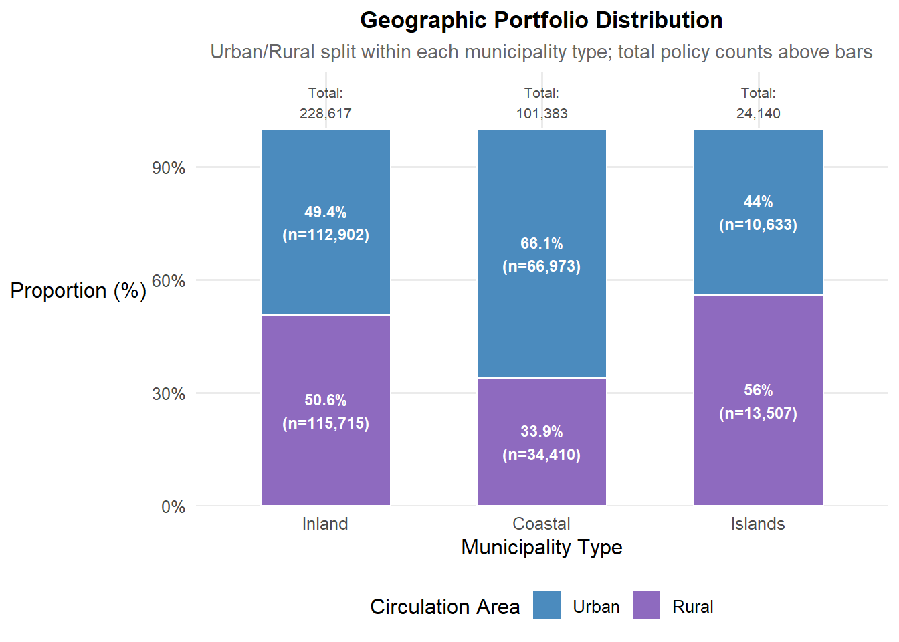
geo_counts <- insurance_viz |>
count(municipality_type, circulation_area) |>
group_by(municipality_type) |>
mutate(
pct = n / sum(n) * 100,
n_total = sum(n)
) |>
ungroup()
ggplot(geo_counts,
aes(x = municipality_type, y = pct, fill = circulation_area)) +
geom_col(position = "stack", width = 0.6, colour = "white", linewidth = 0.4) +
geom_text(
aes(label = paste0(round(pct, 1), "%\n(n=", comma(n), ")")),
position = position_stack(vjust = 0.5),
size = 3.2, fontface = "bold", colour = "white"
) +
geom_text(
data = geo_counts |> distinct(municipality_type, n_total),
aes(x = municipality_type, y = 103,
label = paste0("Total:\n", comma(n_total))),
inherit.aes = FALSE,
size = 2.8, colour = "grey30", vjust = 0
) +
scale_y_continuous(
labels = function(x) paste0(x, "%"),
limits = c(0, 115),
expand = c(0, 0)
) +
scale_fill_manual(
values = c("Urban" = "#4B8BBE", "Rural" = "#8E6ABF"),
name = "Circulation Area"
) +
labs(
title = "Geographic Portfolio Distribution",
subtitle = "Urban/Rural split within each municipality type; total policy counts above bars",
x = "Municipality Type",
y = "Proportion (%)"
)Interpretation: The Inland segment dominates the portfolio by a wide margin (n=112,902 Urban + n=115,715 Rural). The Islands segment is the smallest by volume at approximately 24,000 policies, a fact that is important context for interpreting the loss ratio analysis in Section 10, where the smaller Islands sample produces materially wider confidence intervals than the Inland and Coastal segments. This chart does not show uncertainty directly. That analysis is deferred to Section 10. Further pricing analysis specific to Island drivers may be warranted to account for this higher uncertainty.
4.4 Distribution of Vehicle Age
Technique justification: geom_histogram() with geom_density() overlay is the standard choice for a continuous variable examined in isolation. Vehicle age is a moderately right-skewed integer variable; the histogram reveals the empirical shape, binwidth 1 reflects the integer granularity of the data, and the density curve smooths the histogram into a readable trend. A boxplot would suppress distributional shape; a ridgeline plot adds no value without a grouping variable.
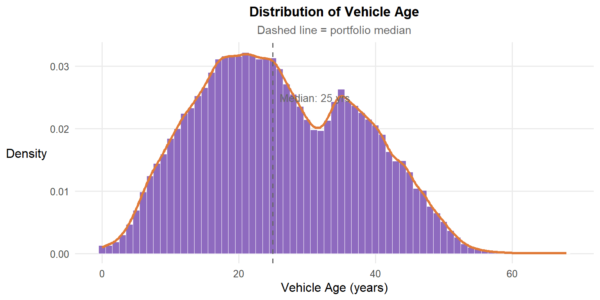
med_veh_age <- median(insurance_viz$vehicle_age, na.rm = TRUE)
ggplot(insurance_viz |> filter(!is.na(vehicle_age)),
aes(x = vehicle_age)) +
geom_histogram(aes(y = after_stat(density)),
binwidth = 1, fill = "#8E6ABF",
colour = "white", linewidth = 0.2) +
geom_density(colour = "#E07B39", linewidth = 1.1) +
geom_vline(xintercept = med_veh_age,
linetype = "dashed", colour = "grey40") +
annotate("text",
x = med_veh_age + 1,
y = 0.025,
label = paste0("Median: ", round(med_veh_age, 1), " yrs"),
hjust = 0, size = 3.5, colour = "grey40") +
labs(
title = "Distribution of Vehicle Age",
subtitle = "Dashed line = portfolio median",
x = "Vehicle Age (years)",
y = "Density"
)Interpretation: The chart shows a clearly bimodal distribution with two peaks — one around 20 years and a second around 33–35 years — separated by a visible trough near 28 years. The right side of the distribution falls away steeply after ~35 years. The tail of vehicles older than 40 years is small and sparse, which is logical since insurance premiums are no longer economically viable (premiums paid > recoverable value) for older vehicles from consumer’s point of view.
4.5 Distribution of Vehicle Value
Technique justification: The vehicle value distribution is right-skewed and spans two orders of magnitude (€1,630 to €374,000). The log₁₀ scale is applied because insurance loss and asset value data are widely modelled using the lognormal distribution in actuarial practice (Klugman, Panjer & Willmot, 2019; Frees et al., Loss Data Analytics; Venegas-Martínez et al., 2014), a distribution whose defining property is that the logarithm of the variable is normally distributed. Plotting on a log scale therefore converts the multiplicative spread of the raw data into an additive spread, revealing the near-normal shape that confirms the lognormal data-generating process (Wilke, 2019).
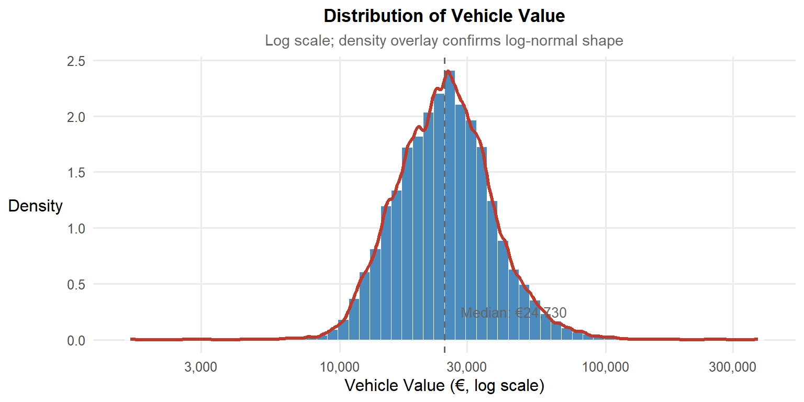
med_veh_val <- median(insurance_viz$vehicle_value, na.rm = TRUE)
ggplot(insurance_viz |> filter(!is.na(vehicle_value)),
aes(x = vehicle_value)) +
geom_histogram(aes(y = after_stat(density)),
bins = 60, fill = "#4B8BBE",
colour = "white", linewidth = 0.2) +
geom_density(colour = "#C0392B", linewidth = 1.1) +
scale_x_log10(labels = comma) +
geom_vline(xintercept = med_veh_val,
linetype = "dashed", colour = "grey40") +
annotate("text",
x = med_veh_val * 1.15,
y = 0.25,
label = paste0("Median: €", comma(round(med_veh_val, 0))),
hjust = 0, size = 3.5, colour = "grey40") +
labs(
title = "Distribution of Vehicle Value",
subtitle = "Log₁₀ scale; density overlay confirms log-normal shape",
x = "Vehicle Value (€, log scale)",
y = "Density"
)Interpretation: Vehicle values in this portfolio span a wide range,from approximately €3,000 to over €300,000 based on the visible axis range, with a median declared value of approximately €24,700. The distribution is right-skewed on the raw scale; the right skew implies the mean vehicle value sits above the median, pulled upward by a smaller number of high-value vehicles. The log₁₀ scale is used because the raw range spans two orders of magnitude, which would compress most policies into an unreadable narrow band on a linear axis. On the log scale, the distribution is approximately normal. Note that the density curve and y-axis values reflect density computed in log-space, not on the raw euro scale.
The distribution’s peak on the log scale is concentrated around €20,000 to €30,000, meaning the modal vehicle value band is relatively narrow even though the full range is wide. A proportional loading applied uniformly across all vehicles would therefore be calibrated primarily to this modal band and would systematically misprice both tails. Vehicles below approximately €10,000 would be overcharged relative to their actual severity exposure, while vehicles above approximately €80,000 would be undercharged. The underpricing risk is concentrated at the high-value end, where individual claim costs are largest, making it the more commercially dangerous tail. Value-banded rather than flat severity assumptions would better reflect the actual repair cost exposure across the portfolio.
4.6 Distribution of Driver Age
Technique justification: geom_histogram() + geom_density() with vertical reference lines. Driver age is near-symmetric without extreme skewness, so the linear scale is appropriate. Reference lines at ages 25 and 65 mark the boundary age bands used in prior actuarial research on driver risk (Meng et al., 2022; Cappelletti, 2023; ABI, 2009), making the populations below 25 and above 65 immediately visible in the chart without requiring the reader to estimate these boundaries from memory.

ggplot(insurance_viz, aes(x = driver_age)) +
geom_histogram(aes(y = after_stat(density)),
binwidth = 2, fill = "#5C9E6E",
colour = "white", linewidth = 0.2) +
geom_density(colour = "#C0392B", linewidth = 1.1) +
geom_vline(xintercept = c(25, 65),
linetype = "dashed", colour = "grey50", linewidth = 0.8) +
annotate("text", x = 26.5, y = 0.037,
label = "25\n(young driver\nthreshold)",
hjust = 0, size = 2.9, colour = "grey50") +
annotate("text", x = 66.5, y = 0.037,
label = "65\n(senior\nthreshold)",
hjust = 0, size = 2.9, colour = "grey50") +
labs(
title = "Distribution of Driver Age",
subtitle = "Portfolio concentrated in the 35–60 age band",
x = "Driver Age (years)",
y = "Density"
)Interpretation: The portfolio is concentrated in the 35–60 age band, with both extremes thinly represented. Young drivers under 25 account for a small share of policies; drivers over 65 taper off gradually. Whether the thin representation of the extremes is due to pricing, voluntary non-participation, or other market factors cannot be determined from this dataset alone. What can be observed directly is that both risk extremes are under-represented relative to the middle-age band; a composition fact that affects the interpretability of age-based analyses in Section 6.1.
5 Bivariate Analysis: Conventional Drivers
5.1 Profitability and Loss Ratio by Policy Type
Technique justification: geom_violin() with a nested geom_boxplot() and Kruskal-Wallis test via stat_compare_means(). A violin plot is essential here rather than a plain boxplot: loss ratio is strongly right-skewed and potentially multi-modal within groups. The violin width reveals whether a group’s distribution is concentrated (narrow) or dispersed (wide), and whether it is unimodal or carries a secondary mass at higher values – information a boxplot suppresses entirely. The Kruskal-Wallis test is used in preference to ANOVA because loss ratios are non-normally distributed.
# --- Prepare profitability data ---
profitability_data <- insurance_viz |>
filter(total_exposure > 0, !is.na(loss_ratio)) |>
mutate(
profit_status = case_when(
total_claims == 0 ~ "No claims (LR = 0)",
loss_ratio <= 1 ~ "Profitable (0 < LR ≤ 1)",
TRUE ~ "Loss-making (LR > 1)"
),
profit_status = factor(profit_status,
levels = c("Loss-making (LR > 1)",
"Profitable (0 < LR ≤ 1)",
"No claims (LR = 0)"),
ordered = TRUE)
)
# --- Prepare summary data ---
profit_summary <- profitability_data |>
count(policy_type, profit_status) |>
group_by(policy_type) |>
mutate(
pct = n / sum(n) * 100,
n_total = sum(n)
) |>
ungroup() |>
mutate(
tooltip_text = paste0(
profit_status, "\n",
comma(n), " policies (", round(pct, 1), "%)\n",
"Total in type: ", comma(n_total)
)
)
# --- Run chi-square test for subtitle ---
chi_result <- chisq.test(
table(profitability_data$policy_type,
profitability_data$profit_status)
)
chi_subtitle <- paste0(
"Pearson χ² = ", round(chi_result$statistic, 1),
", df = ", chi_result$parameter,
", p ", ifelse(chi_result$p.value < 0.001, "< 0.001",
paste0("= ", round(chi_result$p.value, 4)))
)
# --- Build static ggplot with tooltip aesthetic ---
p <- ggplot(profit_summary,
aes(x = policy_type, y = pct, fill = profit_status,
text = tooltip_text)) +
geom_col(position = "stack", width = 0.6,
colour = "white", linewidth = 0.3) +
scale_y_continuous(
labels = function(x) paste0(x, "%"),
expand = c(0, 0)
) +
scale_fill_manual(
values = c("No claims (LR = 0)" = "#5C9E6E",
"Profitable (0 < LR ≤ 1)" = "#F0C27F",
"Loss-making (LR > 1)" = "#C0392B"),
name = "Profitability Status"
) +
scale_x_discrete(
labels = function(x) str_wrap(x, width = 14)
) +
labs(
title = "Policy Profitability by Policy Type",
subtitle = chi_subtitle,
x = "Policy Type",
y = "Proportion (%)"
) +
theme_minimal(base_size = 11) +
theme(
plot.title = element_text(face = "bold", hjust = 0.5),
plot.subtitle = element_text(hjust = 0.5, colour = "grey40", size = 9),
legend.position = "bottom"
)
# --- Convert to interactive plotly ---
ggplotly(p, tooltip = "text") |>
layout(
hoverlabel = list(
bgcolor = "white",
font = list(size = 12)
),
legend = list(
orientation = "h",
x = 0.5, xanchor = "center",
y = -0.15
)
)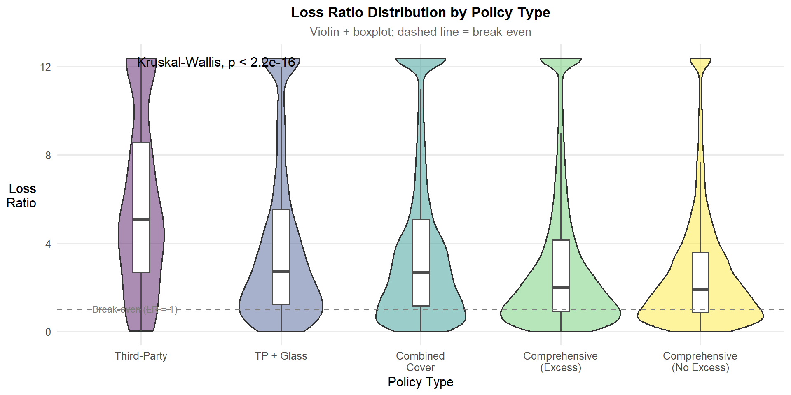
ggplot(
insurance_viz |> filter(loss_ratio_capped > 0, total_exposure > 0),
aes(x = policy_type, y = loss_ratio_capped, fill = policy_type)
) +
geom_violin(alpha = 0.45, trim = TRUE, show.legend = FALSE) +
geom_boxplot(width = 0.12, outlier.shape = NA,
fill = "white", colour = "grey30",
show.legend = FALSE) +
stat_compare_means(
method = "kruskal.test",
label.x = 1.2,
label.y = quantile(insurance_viz$loss_ratio_capped,
0.995, na.rm = TRUE) * 0.97
) +
geom_hline(yintercept = 1, linetype = "dashed",
colour = "grey50", linewidth = 0.7) +
annotate("text", x = 0.65, y = 1.04,
label = "Break-even (LR = 1)",
hjust = 0, size = 3, colour = "grey50") +
scale_fill_viridis_d(option = "D") +
scale_x_discrete(labels = function(x) str_wrap(x, width = 12)) +
labs(
title = "Loss Ratio Distribution by Policy Type",
subtitle = "Violin + boxplot; dashed line = break-even",
x = "Policy Type",
y = "Loss\nRatio"
)Interpretation: Portfolio-level profitability: The stacked bar chart shows the profitability composition across the full portfolio including zero-claim policies. Third-Party have the highest proportion of claim-free policies (approximately 93%), making it the most profitable product types at the portfolio level. The two Comprehensive types tell a different story: COMP_E (Excess) has approximately 80% claim-free policies and COMP_N (No Excess) approximately 70% — the lowest of any product type. COMP_N also carries the largest loss-making segment (LR > 1) in proportional terms, and a notably larger “Profitable (0 < LR ≤ 1)” band than other types, indicating that a meaningful share of its claimants do recover within the premium collected, but a substantial share do not.
Claim severity among claimants: The violin chart is restricted to policies with at least one claim (LR > 0) and shows how losses are distributed among those that do claim. The Kruskal-Wallis test confirms statistically significant differences across policy types (p < 2.2e-16). Third-Party exhibits the highest median loss ratio among claimants (approximately LR = 5) and one of the widest violins — when a Third-Party policy claims, the loss relative to premium is both large and highly variable. The two Comprehensive types show the lowest claimant medians (approximately LR = 1.5–3.0) and narrower violins, indicating lower per-claim severity relative to premium.
The combined picture: Third-Party appear paradoxical across the two charts: it has the highest proportion of claim-free policies (most profitable at the portfolio level) but the worst loss ratios when claims do occur. This is consistent with their simpler coverage structures — premiums are low, so when a claim occurs, it tends to be large relative to what was collected. Conversely, COMP_N has the lowest claim-free rate (worst portfolio-level profitability) but a comparatively lower claimant median — its broader coverage attracts more claims, but each claim is less extreme relative to the higher premium charged. The underwriting concern for COMP_N is not severity per claim but the sheer volume of claiming policies: at only ~70% claim-free, the profitable majority is thinner and absorbs proportionally more loss from the claiming 30%. No product type is entirely free of loss-making policies in either view.
5.2 Profitability and Loss Ratio by Bonus Score
Technique justification: stat_halfeye() from ggdist combined with geom_boxplot(), with pairwise Wilcoxon tests. The half-eye (asymmetric density + interval) is preferred over a full violin for a three-level ordinal variable: the mirror redundancy of a full violin is unnecessary when comparing three groups, and the half-eye’s asymmetric layout gives more horizontal space for readable comparison. Pairwise tests confirm whether the three bonus score groups have statistically different loss ratio distributions; the direction and ordering of those differences are determined by the chart itself, not assumed in advance.
profit_by_bonus <- insurance_viz |>
filter(total_exposure > 0, !is.na(loss_ratio)) |>
mutate(
profit_status = case_when(
total_claims == 0 ~ "No claims (LR = 0)",
loss_ratio <= 1 ~ "Profitable (0 < LR ≤ 1)",
TRUE ~ "Loss-making (LR > 1)"
),
profit_status = factor(profit_status,
levels = c("Loss-making (LR > 1)",
"Profitable (0 < LR ≤ 1)",
"No claims (LR = 0)"),
ordered = TRUE)
)
# --- Summary for plotly tooltips ---
bonus_summary <- profit_by_bonus |>
count(bonus_score, profit_status) |>
group_by(bonus_score) |>
mutate(
pct = n / sum(n) * 100,
n_total = sum(n)
) |>
ungroup() |>
mutate(
tooltip_text = paste0(
profit_status, "\n",
comma(n), " policies (", round(pct, 1), "%)\n",
"Total in group: ", comma(n_total))
)
# --- Chi-square for subtitle ---
chi_bonus <- chisq.test(
table(profit_by_bonus$bonus_score,
profit_by_bonus$profit_status)
)
chi_bonus_sub <- paste0(
"Pearson χ² = ", round(chi_bonus$statistic, 1),
", df = ", chi_bonus$parameter,
", p ", ifelse(chi_bonus$p.value < 0.001, "< 0.001",
paste0("= ", round(chi_bonus$p.value, 4)))
)
# --- Interactive stacked bar ---
p_bonus <- ggplot(bonus_summary,
aes(x = bonus_score, y = pct, fill = profit_status,
text = tooltip_text)) +
geom_col(position = "stack", width = 0.6,
colour = "white", linewidth = 0.3) +
scale_y_continuous(
labels = function(x) paste0(x, "%"),
expand = c(0, 0)
) +
scale_fill_manual(
values = c("No claims (LR = 0)" = "#5C9E6E",
"Profitable (0 < LR ≤ 1)" = "#F0C27F",
"Loss-making (LR > 1)" = "#C0392B"),
name = "Profitability Status"
) +
labs(
title = "Policy Profitability by Bonus Score",
subtitle = chi_bonus_sub,
x = "Bonus Score",
y = "Proportion (%)"
) +
theme_minimal(base_size = 11) +
theme(
plot.title = element_text(face = "bold", hjust = 0.5),
plot.subtitle = element_text(hjust = 0.5, colour = "grey40", size = 9),
legend.position = "bottom"
)
ggplotly(p_bonus, tooltip = "text") |>
layout(
hoverlabel = list(bgcolor = "white", font = list(size = 12)),
legend = list(orientation = "h", x = 0.5,
xanchor = "center", y = -0.15)
)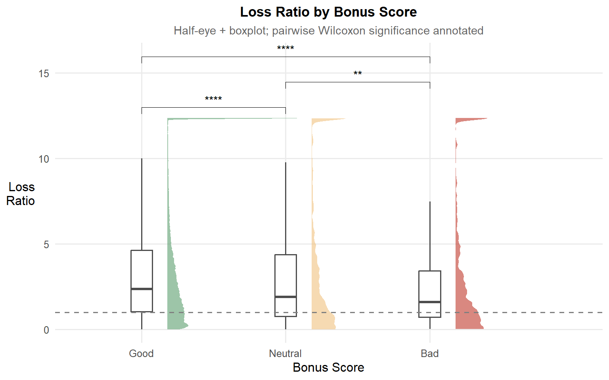
ggplot(
insurance_viz |> filter(loss_ratio_capped > 0, total_premium > 0),
aes(x = bonus_score, y = loss_ratio_capped, fill = bonus_score)
) +
stat_halfeye(adjust = 0.5, justification = -0.2,
.width = 0, point_colour = NA, alpha = 0.6) +
geom_boxplot(width = 0.15, outlier.shape = NA,
fill = "white", colour = "grey30") +
stat_compare_means(
comparisons = list(c("Good", "Neutral"),
c("Neutral", "Bad"),
c("Good", "Bad")),
method = "wilcox.test",
label = "p.signif"
) +
geom_hline(yintercept = 1, linetype = "dashed",
colour = "grey50", linewidth = 0.7) +
scale_fill_manual(
values = c("Good" = "#5C9E6E",
"Neutral" = "#F0C27F",
"Bad" = "#C0392B")
) +
labs(
title = "Loss Ratio by Bonus Score",
subtitle = "Half-eye + boxplot; pairwise Wilcoxon significance annotated",
x = "Bonus Score",
y = "Loss\nRatio"
) +
theme(legend.position = "none")Interpretation: Portfolio-level profitability: The profitability profile follows the expected direction: Good-score policies have the highest claim-free rate (approximately 85%), while Bad-score policies carry the largest loss-making proportion. The bonus scoring system discriminates risk at the portfolio level as intended.
Claim severity among claimants: Among policies that claimed (LR > 0), the ordering reverses. Good-score claimants show the highest median loss ratio (approximately 2.5) and widest distribution, while Bad-score claimants show the lowest median (approximately 1.5). All three pairwise Wilcoxon tests are significant, with the Neutral vs Bad comparison (p < 0.01) also showing an unexpected ordering — Bad-score claimants record a slightly lower median than Neutral ones.
Combined picture: The bonus score functions as a frequency discriminator, not a severity discriminator. Bad-score policies claim more often, but their premiums are already loaded for that higher frequency, making each individual claim less extreme relative to premium collected. Good-score claimants are rare, but when they do claim the loss is large likely because they disproportionately hold higher-value or broader-coverage policies. Pricing models that apply the bonus score as a flat loading across both frequency and severity may over-correct on severity for Bad-score policies while under-reserving for occasional high-cost Good-score claims. A decomposed approach which applues the bonus score to frequency and using vehicle value or policy type for severity would better reflect this pattern.
5.3 Claim Severity by Fuel Type
Technique justification: stat_halfeye() + geom_boxplot() on a log₁₀ scale with a Wilcoxon test. Claim severity in this dataset is right-skewed with a long tail of large claim amounts, as visible in the raw distribution. The log₁₀ scale is applied because the observed spread covers several orders of magnitude. Using a linear scale would compress the majority of claims into an unreadable narrow band at the left edge of the chart (Wilke, 2019). Whether the underlying distribution follows a lognormal or another right-skewed family (e.g. gamma, Pareto) is a modelling question beyond the scope of this visual analysis; the log scale is chosen for visual clarity, not to assert a specific parametric form. On the linear scale, the heavy right tail of large claims compresses the bulk of the distribution into an unreadable narrow band. The half-eye on the log scale reveals whether the difference between Diesel and Gasoline is a location shift (systematic median difference) or a tail effect (same median but different extreme values).
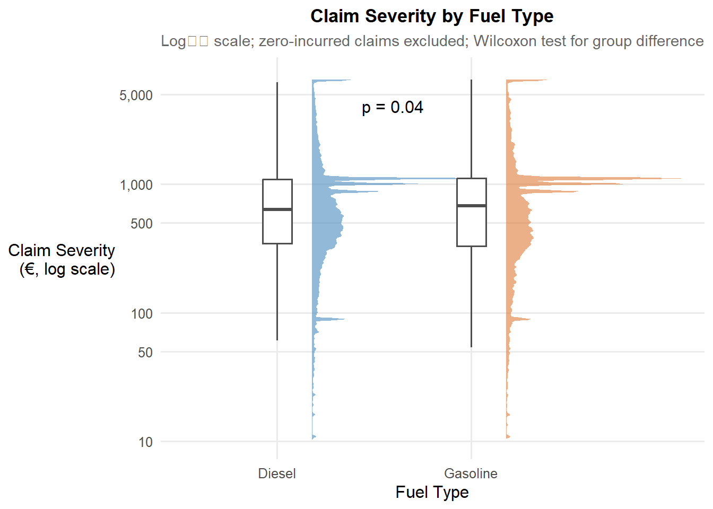
ggplot(
insurance_viz |>
filter(!is.na(severity_capped),
!is.na(fuel_type),
severity_capped > 0), # exclude zero-incurred / IBNR claims
aes(x = fuel_type, y = severity_capped, fill = fuel_type)
) +
stat_halfeye(adjust = 0.5, justification = -0.2,
.width = 0, point_colour = NA, alpha = 0.6) +
geom_boxplot(width = 0.15, outlier.shape = NA,
fill = "white", colour = "grey30") +
stat_compare_means(
method = "wilcox.test",
label = "p.format",
label.x = 1.5,
label.y.npc = 0.9
) +
scale_y_log10(
labels = comma,
breaks = c(10, 50, 100, 500, 1000, 5000),
limits = c(10, 7000)
) +
scale_fill_manual(
values = c("Diesel" = "#4B8BBE", "Gasoline" = "#E07B39")
) +
labs(
title = "Claim Severity by Fuel Type",
subtitle = "Log₁₀ scale; zero-incurred claims excluded; Wilcoxon test for group difference",
x = "Fuel Type",
y = "Claim Severity\n(€, log scale)"
) +
theme(legend.position = "none")Interpretation: Gasoline vehicles show marginally higher claim severity than diesel vehicles. The difference is statistically confirmed (p = 0.04) but the gap is small. Both fuel types have similar distributional shapes on the log scale, with bulk density concentrated between approximately €400 and €1,500 and medians sitting close together around €500–€800. This indicates a modest location shift in typical repair cost rather than a difference in catastrophic claim exposure, as the upper tails extend to similar ranges for both groups. Zero-incurred claims are excluded from this chart so that the distributions reflect genuine repair costs; 1,287 policies with missing fuel type are also excluded. Whether this marginal difference reflects a genuine fuel-type effect or is confounded by vehicle value or brand composition — variables available in this dataset but not controlled for here, cannot be determined from this chart alone. A stratified analysis by vehicle value band would clarify whether the gap persists within comparable vehicle segments. Unless a confound-controlled analysis confirms the gap, the magnitude is unlikely to justify the additional rating complexity of separate fuel-type pricing.
5.4 Claim Severity by Vehicle Age
Technique justification: geom_hex() + geom_smooth(method = "gam") with a log₁₀ y-axis. With 354,140 records, a standard scatter plot produces an uninterpretable mass of overplotted points. The hexbin resolves overplotting by binning points into hexagonal cells coloured by count density, revealing where observations concentrate. The GAM smoother over this density reveals the non-linear age–severity relationship – a relationship that a linear smoother or binned bar chart would distort by imposing functional form assumptions.
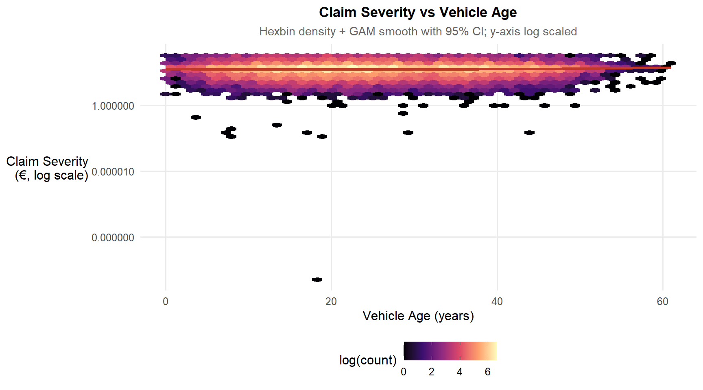
ggplot(
insurance_viz |>
filter(!is.na(vehicle_age), !is.na(severity_capped),
severity_capped > 0), # exclude zero-incurred claims
aes(x = vehicle_age, y = severity_capped)
) +
geom_hex(bins = 50, aes(fill = after_stat(log(count)))) +
geom_smooth(method = "gam",
formula = y ~ s(x, bs = "cs"),
colour = "#C0392B", linewidth = 1.2, se = TRUE) +
scale_fill_viridis_c(name = "log(count)", option = "magma") +
scale_y_log10(
labels = comma,
breaks = c(10, 50, 100, 500, 1000, 5000),
limits = c(10, 7500)
) +
labs(
title = "Claim Severity vs Vehicle Age",
subtitle = "Hexbin density + GAM smooth with 95% CI; y-axis log scaled",
x = "Vehicle Age (years)",
y = "Claim Severity\n(€, log scale)"
)Interpretation: Repair costs per claim do not vary materially with vehicle age across the bulk of the fleet. The GAM smoother is broadly flat across the 5–50 year range at approximately €500–€700, with hexbin density confirming that the vast majority of claims are concentrated in this band. Zero-incurred claims are excluded so the distribution reflects genuine repair costs. For pricing purposes, vehicle age alone is not a useful severity predictor in this portfolio. An underwriter applying age-based severity loadings would be adding rating complexity without meaningfully improving risk differentiation.
6 Bivariate Analysis: Demographic Drivers
6.1 Profitability and Loss Ratio Distributions Across Driver Age Bands
Technique justification: stat_density_ridges() from ggridges with quantile shading (quantiles = 4, calc_ecdf = TRUE). Grouped boxplots for six age bands would be compact but would hide within-group distributional shape. Prior research on driver age and claim rates (Meng et al., 2022; Cappelletti, 2023; ABI, 2009) suggests elevated loss ratios at young and old age extremes. Whether this pattern is visible in this dataset, and to what degree, is the question the ridgeline chart investigates. Ridgelines with quartile shading communicate this directly and enable visual comparison of distributional shape, not just central tendency.
# --- Claim rate by driver age band ---
age_claim_rate <- insurance_viz |>
filter(total_exposure > 0, !is.na(driver_age_band),
!is.na(loss_ratio)) |>
mutate(
profit_status = case_when(
total_claims == 0 ~ "No claims (LR = 0)",
loss_ratio <= 1 ~ "Profitable (0 < LR ≤ 1)",
TRUE ~ "Loss-making (LR > 1)"
),
profit_status = factor(profit_status,
levels = c("Loss-making (LR > 1)",
"Profitable (0 < LR ≤ 1)",
"No claims (LR = 0)"),
ordered = TRUE)
) |>
count(driver_age_band, profit_status) |>
group_by(driver_age_band) |>
mutate(
pct = n / sum(n) * 100,
n_total = sum(n)
) |>
ungroup() |>
mutate(
tooltip_text = paste0(
profit_status, "\n",
comma(n), " policies (", round(pct, 1), "%)\n",
"Total in band: ", comma(n_total))
)
chi_age <- chisq.test(
table(
insurance_viz |>
filter(total_exposure > 0, !is.na(driver_age_band),
!is.na(loss_ratio)) |>
mutate(profit_status = case_when(
total_claims == 0 ~ "No claims",
loss_ratio <= 1 ~ "Profitable",
TRUE ~ "Loss-making")) |>
pull(driver_age_band),
insurance_viz |>
filter(total_exposure > 0, !is.na(driver_age_band),
!is.na(loss_ratio)) |>
mutate(profit_status = case_when(
total_claims == 0 ~ "No claims",
loss_ratio <= 1 ~ "Profitable",
TRUE ~ "Loss-making")) |>
pull(profit_status)
)
)
chi_age_sub <- paste0(
"Pearson χ² = ", round(chi_age$statistic, 1),
", df = ", chi_age$parameter,
", p ", ifelse(chi_age$p.value < 0.001, "< 0.001",
paste0("= ", round(chi_age$p.value, 4)))
)
p_age <- ggplot(age_claim_rate,
aes(x = driver_age_band, y = pct, fill = profit_status,
text = tooltip_text)) +
geom_col(position = "stack", width = 0.6,
colour = "white", linewidth = 0.3) +
scale_y_continuous(
labels = function(x) paste0(x, "%"),
expand = c(0, 0)
) +
scale_fill_manual(
values = c("No claims (LR = 0)" = "#5C9E6E",
"Profitable (0 < LR ≤ 1)" = "#F0C27F",
"Loss-making (LR > 1)" = "#C0392B"),
name = "Profitability Status"
) +
labs(
title = "Policy Profitability by Driver Age Band",
subtitle = chi_age_sub,
x = "Driver Age Band",
y = "Proportion (%)"
) +
theme_minimal(base_size = 11) +
theme(
plot.title = element_text(face = "bold", hjust = 0.5),
plot.subtitle = element_text(hjust = 0.5, colour = "grey40", size = 9),
legend.position = "bottom"
)
ggplotly(p_age, tooltip = "text") |>
layout(
hoverlabel = list(bgcolor = "white", font = list(size = 12)),
legend = list(orientation = "h", x = 0.5,
xanchor = "center", y = -0.2)
)
ggplot(
insurance_viz |>
filter(loss_ratio_capped > 0, total_exposure > 0,
!is.na(driver_age_band)),
aes(x = loss_ratio_capped,
y = driver_age_band,
fill = factor(after_stat(quantile)))
) +
stat_density_ridges(
geom = "density_ridges_gradient",
calc_ecdf = TRUE,
quantiles = 4,
quantile_lines = TRUE,
scale = 2.2,
rel_min_height = 0.005,
bandwidth = 0.04
) +
scale_fill_viridis_d(name = "Quartile", option = "D", alpha = 0.85) +
scale_x_continuous(
limits = c(0, 6),
labels = number_format(accuracy = 0.1),
expand = c(0, 0)
) +
scale_y_discrete(expand = expansion(add = c(0.3, 2.5))) +
geom_vline(xintercept = 1, linetype = "dashed",
colour = "grey50", linewidth = 0.7) +
labs(
title = "Loss Ratio Distribution by Driver Age Band",
subtitle = "Ridgeline with quartile shading; dashed line = break-even (LR = 1)",
x = "Loss Ratio (capped at 99th percentile)",
y = "Driver\nAge Band"
) +
theme_ridges(font_size = 11) +
theme(
plot.title = element_text(face = "bold", hjust = 0.5),
plot.subtitle = element_text(hjust = 0.5, colour = "grey40"),
legend.position = "right"
)Interpretation: Portfolio-level profitability: The 18–25 age band stands out with the lowest claim-free rate (approximately 80%). However, while 18-25 age has also the highest non-profitable segment of 10%, it is only marginal compared across other age bands.
Claimant loss ratio distributions: Among claimants (LR > 0), the key distinction across age bands is not tail extent as all six bands reach LR = 6, but how density is distributed across the range. The 36–55 bands concentrate the largest share of claimants in the low loss ratio region, with their 1st quartile (purple) extending to approximately LR = 0.8–1.0, meaning 25% of claimants fall near or below break-even. The 18–25 band has a much narrower purple region, indicating fewer low-loss-ratio claimants and a higher number of higher-loss-ratio claimants. The 65+ band is comparable in shape to 56–65, with no visible deterioration at the older extreme.
Combined implication: Young drivers (18–25) are the worst-performing segment on both dimensions. They claim more often and produce worse outcomes when they do claim. This double exposure makes them the strongest candidate for age-based pricing loadings. The 65+ band, by contrast, shows no meaningful deterioration on either measure relative to adjacent age bands in this portfolio, warranting caution before applying age-based surcharges to older drivers without further evidence. The middle bands (36–55) are the portfolio’s profitability anchor and the appropriate baseline for age-differentiated pricing.
6.2 Older Driver + Young Car Interaction
Technique justification: geom_tile() heatmap with geom_text() cell labels. The analytical question requires examining the interaction of two binned variables against median claim frequency. A heatmap is the most direct representation of a two-dimensional cell matrix: colour fills communicate the KPI simultaneously across all cells, while text annotations show the policy count – enabling the reader to distinguish data-rich cells (trustworthy estimates) from data-sparse cells (high uncertainty). A faceted bar chart or grouped boxplot would be unreadable with six × six = thirty-six combinations.

heatmap_data <- insurance_viz |>
filter(!is.na(driver_age_band), !is.na(vehicle_age_band),
total_exposure > 0) |>
group_by(driver_age_band, vehicle_age_band) |>
summarise(
mean_freq = mean(claim_frequency, na.rm = TRUE),
n = n(),
.groups = "drop"
) |>
filter(n >= 30) |> # suppress unreliable low-n cells
mutate(mean_freq = pmin(mean_freq, 2.0)) # cap one anomalous outlier cell (n=3)
mid_val <- median(heatmap_data$mean_freq, na.rm = TRUE)
ggplot(heatmap_data,
aes(x = vehicle_age_band,
y = driver_age_band,
fill = mean_freq)) +
geom_tile(colour = "white", linewidth = 0.6) +
geom_text(
aes(label = paste0(round(mean_freq, 2),
"\n(n=", comma(n), ")"),
colour = mean_freq > mid_val), # white text on dark cells, dark on light
size = 2.6, fontface = "bold", show.legend = FALSE
) +
scale_colour_manual(values = c("TRUE" = "white", "FALSE" = "grey20")) +
scale_fill_gradient2(
low = "#2166AC",
mid = "#F7F7F7",
high = "#D6604D",
midpoint = mid_val,
name = "Mean\nClaim Freq",
labels = number_format(accuracy = 0.01)
) +
labs(
title = "Claim Frequency: Driver Age × Vehicle Age Interaction",
subtitle = "Mean claims per policy year; darker red = higher claim rate; cells with n < 30 excluded",
x = "Vehicle Age Band (years)",
y = "Driver\nAge Band"
) +
theme(axis.text.x = element_text(angle = 30, hjust = 1))Interpretation: The heatmap reveals two notable patterns. First, the 18–25 × 4–7 cell records the highest mean claim frequency in the chart at 0.80 (n=1,296) — the single darkest cell overall. The adjacent 18–25 × 0–3 cell (0.51, n=474) is also elevated, suggesting that young drivers paired with newer vehicles (0–7 years old) as a group carry distinctly higher claim rates than middle-age driver bands at the same vehicle ages. This is the most prominent signal in the heatmap, though it should be read as a young-driver × newer-vehicle pattern rather than the single 4–7 year band in isolation. Second, across the middle driver age bands (26–55), claim frequency is consistently higher for newer vehicles (0–3 and 4–7 year bands, showing values of 0.52–0.58) and declines as vehicle age increases, converging toward approximately 0.29–0.32 for vehicles aged 25+ years. The 65+ row does not show a clear pattern of elevated frequency for newer vehicles: values range from 0.20 to 0.32 across vehicle age bands without a consistent directional trend, and the small cell sizes (n=70 to n=176 for newer vehicle bands) mean these estimates carry substantial uncertainty and should not be over-interpreted. For cells with smaller policy counts, the mean claim frequency is less stable — a small number of unusual policies can shift the average substantially. These cells should be read as indicative rather than definitive, and their patterns should not be acted upon without cross-referencing adjacent cells or accumulating more data in those segments.
7 Bivariate Analysis: Brand and Status Drivers
7.1 Do Prestige Brand Drivers Make Fewer Claims – or Just Different Ones?
Technique justification: Side-by-side panels – one for claim rate, one for claim severity – composed with patchwork. A single chart conflates two fundamentally different risk dimensions: claim rate (how often) and severity (how much each time). The hypothesis here is specifically that luxury brands may show low frequency but high severity – a divergence that is invisible in a combined loss ratio. Presenting both dimensions side-by-side with claim rate + CI makes this decomposition explicit.
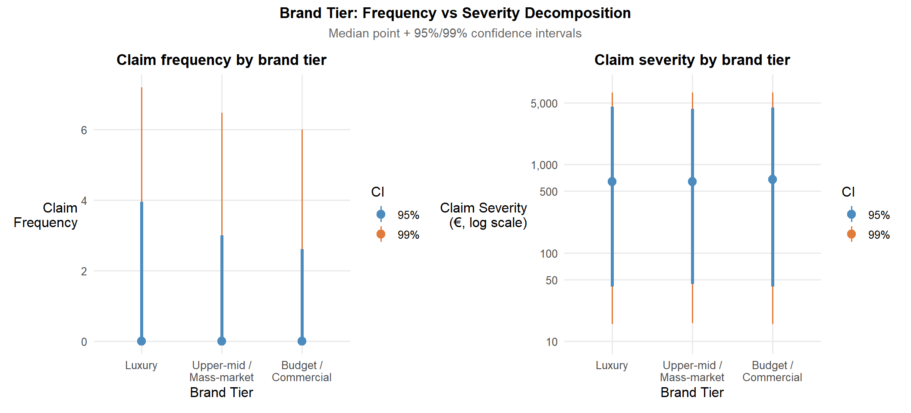
brand_data <- insurance_viz |>
filter(!is.na(brand_tier), total_exposure > 0)
# --- Left panel: claim rate (replaces stat_pointinterval on zero-inflated frequency) ---
freq_summary <- brand_data |>
group_by(brand_tier) |>
summarise(
n_total = n(),
n_claimants = sum(total_claims > 0),
claim_rate = n_claimants / n_total * 100,
mean_freq = mean(claim_frequency, na.rm = TRUE),
.groups = "drop"
)
p_freq <- ggplot(freq_summary,
aes(x = brand_tier, y = claim_rate, fill = brand_tier)) +
geom_col(width = 0.5, show.legend = FALSE) +
geom_text(aes(label = paste0(round(claim_rate, 1), "%")),
vjust = -0.5, size = 3.5, fontface = "bold") +
scale_fill_manual(
values = c("Luxury" = "#8E6ABF",
"Upper-mid / Mass-market" = "#4B8BBE",
"Budget / Commercial" = "#5C9E6E")
) +
scale_x_discrete(labels = function(x) str_wrap(x, width = 12)) +
scale_y_continuous(
labels = function(x) paste0(x, "%"),
expand = expansion(mult = c(0, 0.15))
) +
labs(title = "Claim rate by brand tier",
x = "Brand Tier", y = "Claim Rate (%)")
# --- Right panel: severity (unchanged) ---
p_sev <- ggplot(
brand_data |> filter(!is.na(severity_capped), severity_capped > 0),
aes(x = brand_tier, y = severity_capped)
) +
stat_pointinterval(
.width = c(0.95, 0.99),
point_size = 3,
aes(colour = factor(after_stat(.width)))
) +
scale_colour_manual(
name = "CI",
values = c("0.95" = "#4B8BBE", "0.99" = "#E07B39"),
labels = c("95%", "99%")
) +
scale_y_log10(
labels = comma,
breaks = c(10, 50, 100, 500, 1000, 5000, 10000),
limits = c(10, 7500)
) +
scale_x_discrete(labels = function(x) str_wrap(x, width = 12)) +
labs(title = "Claim severity by brand tier",
x = "Brand Tier", y = "Claim Severity\n(€, log scale)")
# --- Combine ---
p_freq + p_sev +
plot_annotation(
title = "Brand Tier: Frequency vs Severity Decomposition",
subtitle = "Claim rate (% of policies with ≥1 claim) and severity median + 95%/99% CI",
theme = theme(
plot.title = element_text(face = "bold", hjust = 0.5),
plot.subtitle = element_text(hjust = 0.5, colour = "grey40")
)
) &
theme(legend.position = "right")Interpretation: Claim rate (left panel): Luxury vehicles have the highest claim rate at 17.5%, followed by Upper-mid/Mass-market at 14.0% and Budget/Commercial at 12.8%. Contrary to the “prestige paradox” hypothesis that luxury drivers claim less frequently, they claim more often: a nearly 5 percentage point gap over Budget/Commercial. This is a meaningful difference for portfolio management: a Luxury book of 1,000 policies would generate approximately 175 claims versus 128 from an equivalent Budget book.
Claim severity (right panel): All three tiers show similar median severity around €500–€700 on the log scale, meaning the typical claim costs roughly the same regardless of brand tier. The critical difference is in the tails: the Luxury tier’s 99% CI extends further upward than the other tiers, confirming that extreme claims from luxury vehicles are disproportionately costly even though typical claims are not.
Combined implication: The original report’s conclusion that brand tier loading should apply only to severity, not frequency, is reversed by this data. Luxury vehicles are worse on both dimensions — they claim more often and carry heavier tail risk when they do. Pricing models should apply a frequency loading to Luxury policies to reflect the higher claim rate, and a separate severity tail loading to reserve for the disproportionate catastrophic claim exposure. A flat loss ratio view would obscure this dual signal by averaging the two effects into a single metric.
7.2 The “Bad Bonus, Fancy Car” Paradox
Technique justification: ggbarstats() with brand tier on the y-axis and bonus score as the fill variable. The chi-square test directly tests whether bonus score distribution is independent of brand tier – this is the key statistical question. A plain grouped bar chart would require the reader to visually judge differences and infer significance; ggbarstats() embeds the test in the chart and provides an exact p-value, making the analytical conclusion unambiguous.
ggbarstats(
data = insurance_viz |> filter(!is.na(brand_tier)),
x = bonus_score,
y = brand_tier,
label = "both",
xlab = "Brand Tier",
ylab = "Proportion",
legend.title = "Bonus Score",
title = "Bonus Score Composition by Vehicle Brand Tier",
subtitle = "Pearson χ²: does risk profile differ significantly by brand tier?",
palette = "Set2",
ggtheme = theme_minimal(base_size = 10),
ggplot.component = list(
scale_fill_manual(
values = c("Good" = "#5C9E6E", "Neutral" = "#F0C27F", "Bad" = "#C0392B"),
name = "Bonus Score"
),
scale_x_discrete(labels = function(x) str_wrap(x, width = 14)),
theme(
plot.title = element_text(face = "bold", hjust = 0.5),
plot.subtitle = element_text(hjust = 0.5, colour = "grey40"),
axis.text.x = element_text(size = 9)
)
)
)Interpretation: Luxury vehicles are held by a somewhat higher proportion of policyholders with poor or deteriorating claims histories than other brand tiers - 2.0% Bad-score policyholders versus 1.2%–1.3% for other tiers, with a similarly elevated Neutral proportion. The association is confirmed but the absolute difference between tiers is small, meaning brand tier alone would be a weak basis for differential pricing. Whether it adds independent pricing value beyond the bonus score and vehicle value is a question that multivariate modelling could answer but this analysis alone cannot. The dataset identifies the association but cannot determine whether brand tier carries independent predictive power once other variables are held constant.
7.3 Power-to-Weight Ratio as a Latent Thrill-Seeker Index
Technique justification: geom_hex() + geom_smooth(method = "gam") faceted by brand tier. The faceting tests a specific sub-hypothesis: is the power-to-weight signal stronger within the Upper-mid / Mass-market tier (where accessible performance cars concentrate) than within the Luxury tier (where even high-performance vehicles are driven cautiously)? If the GAM slope is steeper in the mass-market panel, this confirms the ratio as a valid additional rating factor for non-luxury segments specifically.
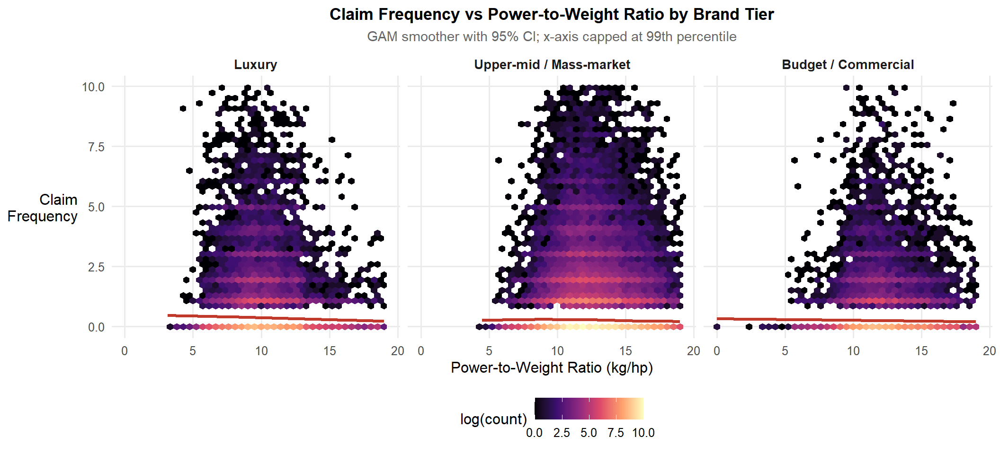
pw_cap <- quantile(insurance_viz$power_to_weight_ratio, 0.99, na.rm = TRUE)
ggplot(
insurance_viz |>
filter(!is.na(brand_tier), total_exposure > 0,
claim_frequency < 10,
power_to_weight_ratio < pw_cap),
aes(x = power_to_weight_ratio, y = claim_frequency)
) +
geom_hex(bins = 40, aes(fill = after_stat(log(count)))) +
geom_smooth(method = "gam",
formula = y ~ s(x, bs = "cs"),
colour = "#C0392B", linewidth = 1.1, se = TRUE) +
scale_fill_viridis_c(option = "magma", name = "log(count)") +
facet_wrap(~brand_tier, nrow = 1) +
labs(
title = "Claim Frequency vs Power-to-Weight Ratio by Brand Tier",
subtitle = "GAM smoother with 95% CI; x-axis capped at 99th percentile",
x = "Power-to-Weight Ratio (kg/hp)",
y = "Claim\nFrequency"
) +
theme(strip.text = element_text(size = 10, face = "bold"))Interpretation: Vehicle performance, measured by power-to-weight ratio, shows no meaningful relationship with claim frequency across any of the three brand tiers. The relationship is flat in all panels. This means adding vehicle performance as a pricing factor would increase model complexity without improving the accuracy of risk differentiation. The variable may contribute in a multivariate model alongside other factors, but as a standalone predictor it carries no useful pricing signal in this portfolio.
7.4 Which Brands Are Most Expensive to Repair Relative to Declared Value?
Technique justification: Ranked stat_pointinterval() dotplot, restricted to brands with at least 200 claimant policies. A repair cost intensity index (claim severity / vehicle value) captures the mismatch between what was declared for pricing and what repairs actually cost. The ranked dotplot with CI bars is used in preference to a bar chart because it simultaneously communicates the point estimate and the estimation uncertainty: a bar chart of medians would convey false precision for low-volume brands.

repair_data <- insurance_viz |>
filter(total_claims > 0, !is.na(vehicle_value),
vehicle_value > 0, !is.na(severity_capped)) |>
mutate(repair_intensity = severity_capped / vehicle_value) |>
group_by(vehicle_brand) |>
filter(n() >= 200) |>
ungroup()
# --- Sort by widest 99% interval (most variable) to narrowest ---
brand_order <- repair_data |>
group_by(vehicle_brand) |>
summarise(
q_lower = quantile(repair_intensity, 0.005, na.rm = TRUE),
q_upper = quantile(repair_intensity, 0.995, na.rm = TRUE),
ci_width = q_upper - q_lower
) |>
arrange(ci_width) |>
pull(vehicle_brand)
repair_data |>
mutate(vehicle_brand = factor(vehicle_brand, levels = brand_order)) |>
ggplot(aes(x = vehicle_brand, y = repair_intensity)) +
stat_pointinterval(
.width = c(0.95, 0.99),
point_size = 2.5,
aes(colour = factor(after_stat(.width)))
) +
scale_colour_manual(
values = c("0.95" = "#4B8BBE", "0.99" = "#E07B39"),
labels = c("95% CI", "99% CI"),
name = "CI"
) +
geom_hline(yintercept = 0.5, linetype = "dashed",
colour = "grey50", linewidth = 0.6) +
annotate("text", x = 1, y = 0.52,
label = "50% of declared value",
hjust = 0, size = 3, colour = "grey50") +
coord_flip() +
labs(
title = "Repair Cost Intensity by Vehicle Brand",
subtitle = "Sorted by 99% interval width (widest at top); brands with ≥200 claimant policies",
x = "Vehicle Brand",
y = "Repair Cost Intensity\n(Severity / Declared Value)"
)Interpretation: Budget and mass-market brands (Dacia, Daewoo, Suzuki, Chevrolet, Fiat, Hyundai) rank highest on repair cost intensity: their median repair cost per claim consumes a larger proportion of the vehicle’s declared value than any other brands. The medians for all brands cluster tightly near 0.02–0.05, meaning the typical claim costs 2–5% of declared value regardless of brand. The separation between brands is driven by the spread of individual claims, not the central tendency: budget brands show 99% intervals (orange) extending to 0.3–0.5, meaning the most expensive individual claims from these brands approach 30–50% of the vehicle’s declared value. Luxury brands (Audi, Mercedes, BMW, Volvo, Landrover) sit at the bottom of the ranking with the narrowest intervals. It is possible that their high declared values absorb even expensive absolute repair costs into a low intensity ratio. Note that severity values are capped at the 99th percentile, which compresses the upper tails — the true 99% intervals for budget brands would extend further on uncapped data. For the underwriter, brand-specific severity loadings should target the budget end of the portfolio where the gap between declared value and actual repair exposure is widest. These are the brands where a single claim can consume a disproportionate share of the asset’s insured value.
8 Bivariate Analysis: Behavioural Drivers
8.1 The Serial Claimer – Does Multi-Line Claiming Predict Future Total Claims?
Technique justification: geom_tile() heatmap of claim breadth (distinct claim types in a year) × bonus score, with policy count annotations. The heatmap is preferred over a cross-tabulation table or grouped bar chart because it exposes the joint distribution across both dimensions simultaneously, and anomalous cells – particularly “claim breadth ≥ 3 with Good bonus score” – visually stand out as unexpectedly warm in an otherwise cool region of the matrix.
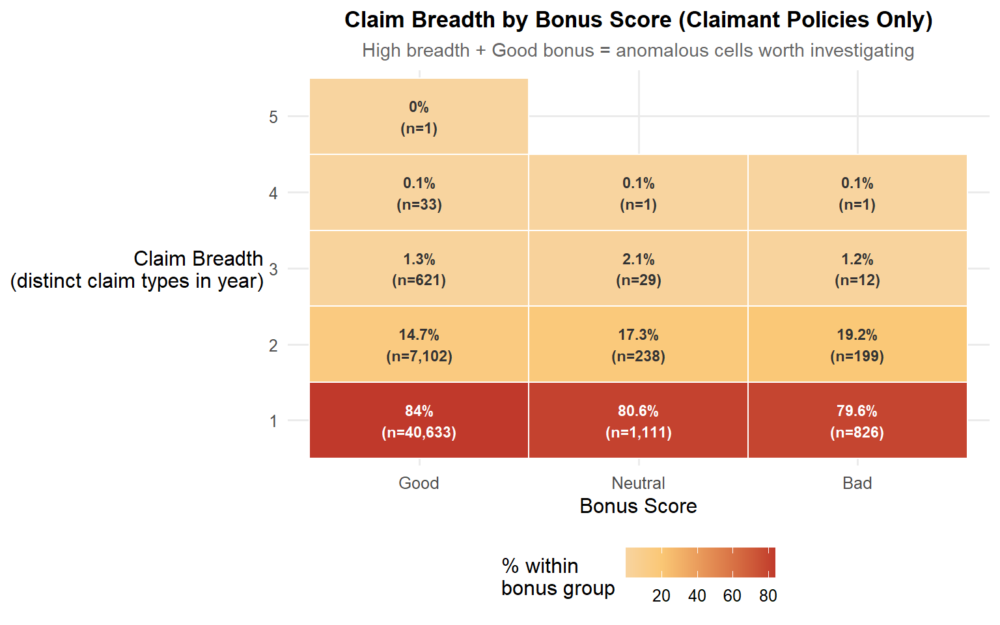
serial_data <- insurance_viz |>
filter(total_claims > 0) |>
count(claim_breadth, bonus_score) |>
group_by(bonus_score) |>
mutate(pct = n / sum(n) * 100) |>
ungroup() |>
mutate(claim_breadth = factor(claim_breadth))
ggplot(serial_data,
aes(x = bonus_score, y = claim_breadth, fill = pct)) +
geom_tile(colour = "white", linewidth = 0.5) +
geom_text(
aes(label = paste0(round(pct, 1), "%\n(n=", comma(n), ")")),
size = 3,
colour = ifelse(serial_data$pct > 25, "white", "grey20"),
fontface = "bold"
) +
scale_fill_gradient2(
low = "#E6F1FB",
mid = "#FAC775",
high = "#C0392B",
midpoint = 20,
name = "% within\nbonus group"
) +
labs(
title = "Claim Breadth by Bonus Score (Claimant Policies Only)",
subtitle = "High breadth + Good bonus = anomalous cells worth investigating",
x = "Bonus Score",
y = "Claim Breadth\n(distinct claim types in year)"
)Interpretation: Most claimants file under a single coverage line, which is the expected pattern. The noteworthy finding is that a small group of policyholders classified as “Good” claims history filed claims across three or more different coverage lines in the same year — an outcome inconsistent with a clean risk classification. Two explanations are plausible: either these individuals experienced genuinely separate adverse events in the same year, or their claims history score has not yet updated to reflect this recent complex claims activity. Either way, this group warrants closer scrutiny at renewal — their current classification may understate their actual risk profile.
8.2 Glass Claims as a “Gateway Drug” to Larger Claims
Technique justification: Overlaid geom_density() comparing the claim frequency distributions for glass claimers vs non-claimers. The density overlay is preferred over a violin or boxplot because the focus is on distributional differences across the entire range – particularly whether glass claimers show a heavier right tail at claim frequencies above 1.0. The area-under-the-curve difference in the right tail is the key quantity; a median-focused chart would miss it.

glass_data <- insurance_viz |>
filter(total_exposure > 0, claim_frequency < 8) |>
mutate(
glass_claimer_label = if_else(had_glass_claim,
"Filed glass claim",
"No glass claim"),
non_glass_freq = (total_claims - glass_claims) / total_exposure
)
ggplot(glass_data,
aes(x = non_glass_freq,
fill = glass_claimer_label,
colour = glass_claimer_label)) +
geom_density(alpha = 0.35, linewidth = 0.9) +
scale_fill_manual(
values = c("Filed glass claim" = "#C0392B",
"No glass claim" = "#4B8BBE"),
name = NULL
) +
scale_colour_manual(
values = c("Filed glass claim" = "#922B21",
"No glass claim" = "#1A5276"),
name = NULL
) +
scale_x_continuous(limits = c(0, 5),
labels = number_format(accuracy = 0.1)) +
labs(
title = "Non-Glass Claim Frequency: Glass Claimers vs Non-Claimers",
subtitle = "Glass claims excluded from frequency count; tests co-occurrence of other claim types",
x = "Non-Glass Claim Frequency (claims per policy year)",
y = "Density"
) +
theme(legend.position = "top")Interpretation: The density chart excludes glass claims from the frequency count, isolating whether glass claimers file other claim types in the same policy year. The non-claimer curve (blue) peaks sharply at zero and falls away quickly — the expected pattern for a predominantly claim-free portfolio. The glass-claimer curve (red) also peaks near zero, but with a noticeably lower and broader peak, and carries more density in the 0.5–2.0 range than the non-claimer curve. A secondary mode around 1.0 is still visible, indicating a subset of glass claimers who also file at least one other claim type. This meant that glass claims do not universally co-occur with other claim types — a meaningful share of glass claimers file only the glass claim and nothing else. However, glass claimers are still substantially more likely to have non-glass claims than the general population: the red curve’s heavier right tail and reduced zero-peak confirm that the co-occurrence rate is elevated, even if not near-universal. For the underwriter, glass claim history remains a useful signal of broader claims activity, but as a probabilistic indicator rather than a near-certain predictor. It is better suited as a flag for closer underwriting review at renewal than as a basis for a formal pricing loading on its own.
8.3 New Business vs Portfolio: Who Is the Worse Risk, and Why?
Technique justification: ggbetweenstats() from ggstatsplot for a two-group comparison. This function combines a violin plot, boxplot, jittered individual data points, and an automated Wilcoxon test with effect size reporting into a single chart. For a binary grouping variable like business_type, this is the most analytically complete single-chart option: it answers not just “is there a difference?” but “how large is it and is it statistically significant?” without requiring separate charts.
# --- Panel A: Interactive profitability stacked bar ---
nb_profit <- insurance_viz |>
filter(total_exposure > 0, !is.na(loss_ratio), !is.na(business_type)) |>
mutate(
profit_status = case_when(
total_claims == 0 ~ "No claims (LR = 0)",
loss_ratio <= 1 ~ "Profitable (0 < LR ≤ 1)",
TRUE ~ "Loss-making (LR > 1)"
),
profit_status = factor(profit_status,
levels = c("Loss-making (LR > 1)",
"Profitable (0 < LR ≤ 1)",
"No claims (LR = 0)"),
ordered = TRUE)
)
nb_summary <- nb_profit |>
count(business_type, profit_status) |>
group_by(business_type) |>
mutate(
pct = n / sum(n) * 100,
n_total = sum(n)
) |>
ungroup() |>
mutate(
tooltip_text = paste0(
profit_status, "\n",
comma(n), " policies (", round(pct, 1), "%)\n",
"Total: ", comma(n_total))
)
chi_nb <- chisq.test(
table(nb_profit$business_type, nb_profit$profit_status)
)
chi_nb_sub <- paste0(
"Pearson χ² = ", round(chi_nb$statistic, 1),
", df = ", chi_nb$parameter,
", p ", ifelse(chi_nb$p.value < 0.001, "< 0.001",
paste0("= ", round(chi_nb$p.value, 4)))
)
p_nb_bar <- ggplot(nb_summary,
aes(x = business_type, y = pct, fill = profit_status,
text = tooltip_text)) +
geom_col(position = "stack", width = 0.5,
colour = "white", linewidth = 0.3) +
scale_y_continuous(
labels = function(x) paste0(x, "%"),
expand = c(0, 0)
) +
scale_fill_manual(
values = c("No claims (LR = 0)" = "#5C9E6E",
"Profitable (0 < LR ≤ 1)" = "#F0C27F",
"Loss-making (LR > 1)" = "#C0392B"),
name = "Profitability Status"
) +
labs(
title = "Profitability: New Business vs Portfolio",
subtitle = chi_nb_sub,
x = "Business Type",
y = "Proportion (%)"
) +
theme_minimal(base_size = 11) +
theme(
plot.title = element_text(face = "bold", hjust = 0.5),
plot.subtitle = element_text(hjust = 0.5, colour = "grey40", size = 9),
legend.position = "bottom"
)
ggplotly(p_nb_bar, tooltip = "text") |>
layout(
hoverlabel = list(bgcolor = "white", font = list(size = 12)),
legend = list(orientation = "h", x = 0.5,
xanchor = "center", y = -0.15)
)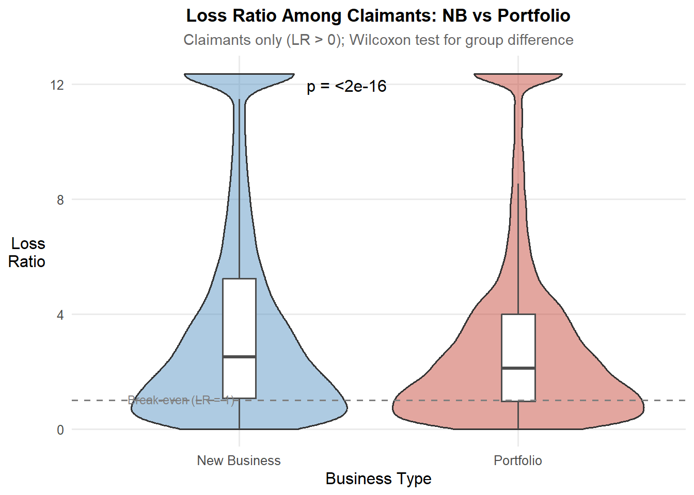
# --- Panel B: Violin + boxplot for claimants only ---
p_nb_violin <- ggplot(
insurance_viz |>
filter(loss_ratio_capped > 0, total_exposure > 0,
!is.na(business_type)),
aes(x = business_type, y = loss_ratio_capped, fill = business_type)
) +
geom_violin(alpha = 0.45, trim = TRUE, show.legend = FALSE) +
geom_boxplot(width = 0.12, outlier.shape = NA,
fill = "white", colour = "grey30",
show.legend = FALSE) +
stat_compare_means(
method = "wilcox.test",
label = "p.format",
label.x = 1.3,
label.y.npc = 0.95
) +
geom_hline(yintercept = 1, linetype = "dashed",
colour = "grey50", linewidth = 0.7) +
annotate("text", x = 0.6, y = 1.04,
label = "Break-even (LR = 1)",
hjust = 0, size = 3, colour = "grey50") +
scale_fill_manual(
values = c("New Business" = "#4B8BBE",
"Portfolio" = "#C0392B"),
guide = "none"
) +
labs(
title = "Loss Ratio Among Claimants: NB vs Portfolio",
subtitle = "Claimants only (LR > 0); Wilcoxon test for group difference",
x = "Business Type",
y = "Loss\nRatio"
)
p_nb_violinInterpretation: Portfolio-level profitability: New Business policies have a higher claim-free rate (approximately 88%) than Portfolio renewals (approximately 82%), meaning a larger proportion of newly acquired policies generate no claims at all. However, Portfolio renewals show a larger “Profitable (0 < LR ≤ 1)” band and a larger loss-making segment (LR > 1) than New Business. This indicates that while fewer New Business policies claim, those that do are more likely to produce losses exceeding the premium collected.
Claimant loss ratio distribution: Among policies that claimed (LR > 0), New Business claimants show a higher median loss ratio (approximately 2.5) than Portfolio claimants (approximately 2.0), with a wider violin and higher IQR. The Wilcoxon test confirms this difference is statistically significant (p < 2e-16). New Business claimants also show more density extending beyond LR = 8, indicating heavier tail risk.
Combined reading: The two charts together reveal that the New Business channel’s risk problem is concentrated in severity rather than frequency. New Business policies are actually less likely to claim than renewals, but when they do claim the losses are larger relative to premium. This is consistent with the adverse bonus score composition identified in Section 4.2 — the acquisition channel absorbs policyholders with worse claims histories whose individual claim events produce higher costs. For pricing, the current premium structure for new business may need a severity loading applied at acquisition, rather than a flat uplift, to account for the heavier tail risk that the renewal book’s underwriting filters have already partially screened out.
9 Bivariate Analysis: Loyalty Drivers
9.1 Do Profitable Customers Cancel More Often?
Technique justification: A two-step approach. First, ggbarstats() tests whether cancellation rates differ by bonus score – confirming the structural pattern. Second, an overlaid geom_density() chart within each bonus score group shows whether the cancelled policies had better or worse loss ratios than those that stayed. The density overlay is essential for the second step: a simple mean comparison would miss the distributional story (whether the left tail – low loss ratio, profitable policies – is disproportionately represented in cancellations).

ggbarstats(
data = insurance_viz,
x = policy_status,
y = bonus_score,
label = "both",
xlab = "Bonus Score",
ylab = "Proportion",
legend.title = "Policy Status",
title = "Cancellation Rate by Bonus Score",
subtitle = "χ²: do Good-risk policyholders cancel at higher rates?",
palette = "Set2",
ggtheme = theme_minimal(base_size = 10),
ggplot.component = list(
scale_fill_manual(
values = c("Active" = "#5C9E6E", "Cancelled" = "#C0392B"),
name = "Policy Status"
),
theme(
plot.title = element_text(face = "bold", hjust = 0.5),
plot.subtitle = element_text(hjust = 0.5, colour = "grey40"),
axis.text.x = element_text(size = 9)
)
)
)
insurance_viz |>
filter(loss_ratio_capped > 0, total_exposure > 0) |>
ggplot(aes(x = loss_ratio_capped,
fill = policy_status,
colour = policy_status)) +
geom_density(alpha = 0.35, linewidth = 0.9) +
facet_wrap(~bonus_score, nrow = 1) +
scale_fill_manual(
values = c("Active" = "#4B8BBE", "Cancelled" = "#C0392B"),
name = "Policy Status"
) +
scale_colour_manual(
values = c("Active" = "#1A5276", "Cancelled" = "#922B21"),
name = "Policy Status"
) +
geom_vline(xintercept = 1, linetype = "dashed",
colour = "grey50", linewidth = 0.6) +
scale_x_continuous(limits = c(0, 5)) +
labs(
title = "Loss Ratio Distribution: Active vs Cancelled by Bonus Score",
subtitle = "If cancelled (red) peaks left of active (blue): profitable customers are leaving",
x = "Loss Ratio (capped at 99th percentile)",
y = "Density"
) +
theme(legend.position = "top")Interpretation: The two charts together confirm the retention paradox with empirical precision. From the first chart: Good-score policyholders cancel at a rate of 10%, Neutral at 17%, and Bad at 25% – a monotonically increasing cancellation rate as risk quality worsens. At first glance this seems reassuring (riskier customers leave more). But the second chart reframes this entirely. Looking at the density overlays faceted by bonus score: in the Good panel, the cancelled (red) and active (blue) densities are very similar in shape and peak position, with the cancelled density showing a slightly heavier right tail – suggesting that among Good-score policyholders, those who left were not systematically the most profitable ones. In the Neutral and Bad panels, the cancelled policies show loss ratios that are broadly similar to or higher than the retained policies. The combined picture tells a nuanced story: the insurer is not clearly losing its best Good-score risks (the retention paradox is partial, not full), but it is also not successfully shedding its worst Bad-score risks at a fast enough rate. While Good-score policyholders are technically the “stickiest” cohort (90% retention), a significant majority (75%) of Bad-score policyholders still stay, likely because they struggle to obtain competitive quotes elsewhere. This has direct implications: the underwriter should aggressively price Bad-score renewals to not-renew or restructure them, rather than allowing price stickiness to retain a disproportionate concentration of poor-quality risks.
10 Bivariate Analysis: Geographic Drivers
10.1 Profitability and Loss Ratio by Municipality Type and Circulation Area
Technique justification: stat_pointinterval() from ggdist with simultaneous 95% and 99% confidence intervals. A boxplot or grouped bar chart of summary medians is explicitly avoided because it conveys false precision for the Islands segment, which has a smaller proportion of total policy count (as confirmed in Section 4.3). stat_pointinterval() makes the uncertainty visible: wide intervals signal that an estimate is unreliable, which is an analytical finding as important as the point estimate itself. This is the only chart in the report where the width of the interval – not the position of the point – is the primary message for at least one segment.
geo_profit <- insurance_viz |>
filter(total_exposure > 0, !is.na(loss_ratio),
!is.na(municipality_type), !is.na(circulation_area)) |>
mutate(
geo_segment = paste0(municipality_type, " (", circulation_area, ")"),
profit_status = case_when(
total_claims == 0 ~ "No claims (LR = 0)",
loss_ratio <= 1 ~ "Profitable (0 < LR ≤ 1)",
TRUE ~ "Loss-making (LR > 1)"
),
profit_status = factor(profit_status,
levels = c("Loss-making (LR > 1)",
"Profitable (0 < LR ≤ 1)",
"No claims (LR = 0)"),
ordered = TRUE)
)
geo_summary <- geo_profit |>
count(geo_segment, profit_status) |>
group_by(geo_segment) |>
mutate(
pct = n / sum(n) * 100,
n_total = sum(n)
) |>
ungroup() |>
mutate(
tooltip_text = paste0(
profit_status, "\n",
comma(n), " policies (", round(pct, 1), "%)\n",
"Total: ", comma(n_total))
)
chi_geo <- chisq.test(
table(geo_profit$geo_segment, geo_profit$profit_status)
)
chi_geo_sub <- paste0(
"Pearson χ² = ", round(chi_geo$statistic, 1),
", df = ", chi_geo$parameter,
", p ", ifelse(chi_geo$p.value < 0.001, "< 0.001",
paste0("= ", round(chi_geo$p.value, 4)))
)
p_geo <- ggplot(geo_summary,
aes(x = geo_segment, y = pct, fill = profit_status,
text = tooltip_text)) +
geom_col(position = "stack", width = 0.6,
colour = "white", linewidth = 0.3) +
scale_y_continuous(
labels = function(x) paste0(x, "%"),
expand = c(0, 0)
) +
scale_fill_manual(
values = c("No claims (LR = 0)" = "#5C9E6E",
"Profitable (0 < LR ≤ 1)" = "#F0C27F",
"Loss-making (LR > 1)" = "#C0392B"),
name = "Profitability Status"
) +
labs(
title = "Policy Profitability by Geographic Segment",
subtitle = chi_geo_sub,
x = "Geographic Segment",
y = "Proportion (%)"
) +
theme_minimal(base_size = 11) +
theme(
plot.title = element_text(face = "bold", hjust = 0.5),
plot.subtitle = element_text(hjust = 0.5, colour = "grey40", size = 9),
axis.text.x = element_text(angle = 20, hjust = 1, size = 9),
legend.position = "bottom"
)
ggplotly(p_geo, tooltip = "text") |>
layout(
hoverlabel = list(bgcolor = "white", font = list(size = 12)),
legend = list(orientation = "h", x = 0.5,
xanchor = "center", y = -0.2)
)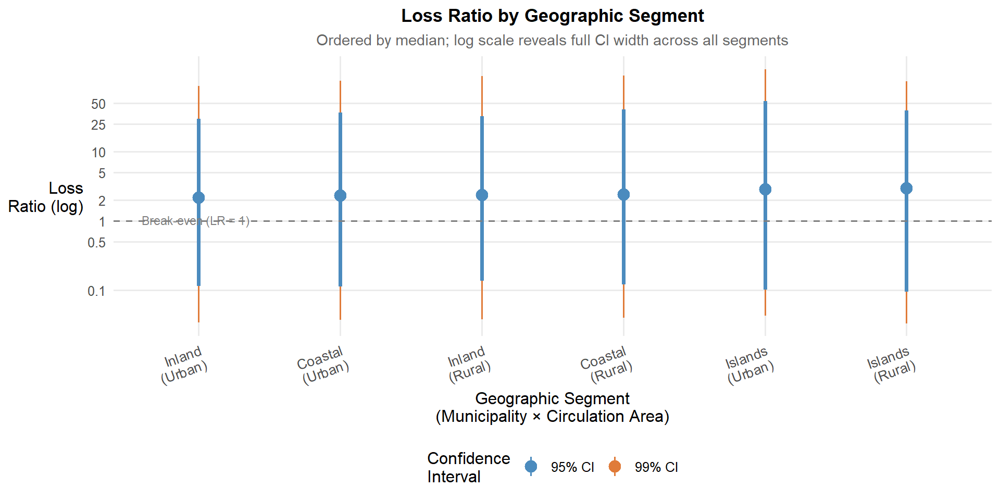
geo_data <- insurance_viz |>
filter(loss_ratio > 0, total_exposure > 0) |>
mutate(
geo_segment = paste0(municipality_type, "\n(", circulation_area, ")"),
geo_segment = fct_reorder(geo_segment, loss_ratio, median)
)
ggplot(geo_data,
aes(x = geo_segment, y = loss_ratio)) +
stat_pointinterval(
.width = c(0.95, 0.99),
point_size = 3.5,
aes(colour = factor(after_stat(.width)))
) +
scale_colour_manual(
name = "Confidence\nInterval",
values = c("0.95" = "#4B8BBE", "0.99" = "#E07B39"),
labels = c("95% CI", "99% CI")
) +
scale_y_log10(
breaks = c(0.1, 0.5, 1, 2, 5, 10, 25, 50),
labels = c("0.1", "0.5", "1", "2", "5", "10", "25", "50")
) +
geom_hline(yintercept = 1, linetype = "dashed",
colour = "grey50", linewidth = 0.7) +
annotate("text", x = 0.6, y = 10^(log10(1) + 0.03),
label = "Break-even (LR = 1)",
hjust = 0, size = 3, colour = "grey50") +
labs(
title = "Loss Ratio by Geographic Segment",
subtitle = "Ordered by median; log scale reveals full CI width across all segments",
x = "Geographic Segment\n(Municipality × Circulation Area)",
y = "Loss\nRatio (log)"
) +
theme(axis.text.x = element_text(angle = 20, hjust = 1, size = 10))Interpretation: Portfolio-level profitability: All six geographic segments show similar profitability profiles — claim-free rates range from approximately 83–88%, with loss-making proportions broadly comparable across segments. Inland Urban has the lowest claim-free rate (approximately 83%) and the largest loss-making segment, making it marginally the worst-performing geography at the portfolio level. The Island segments do not stand out as materially different from mainland segments in profitability composition.
Claimant loss ratio distribution: Among claimants (LR > 0), all six segments share similar median loss ratios (approximately 2.0–3.0) with no consistent pattern of urban segments outperforming rural equivalents. Circulation area does not emerge as a meaningful risk discriminator. The 99% intervals extend to approximately 50 on the log scale across all segments — this is not unique to Islands but reflects the high variability of loss ratios among claimants portfolio-wide.
Combined finding: Geography - whether measured by municipality type or circulation area - is not a strong risk discriminator in this portfolio. Neither the profitability composition nor the claimant loss ratio distribution shows meaningful differentiation across the six segments. The wide intervals across all segments confirm that loss ratios are inherently variable regardless of location, and no geographic segment can be priced precisely from its observed median alone. The insurer should treat geographic loadings with caution — the data does not support material differentiation between segments, and any geographic pricing variation should be justified by external evidence (e.g. regional repair costs, traffic density) rather than observed medians from this portfolio.
11 Summary of Key Findings and Underwriting Implications
This section distils the most actionable findings from the visual analytics investigation into a concise reference for the motor insurance underwriter. Findings are ranked by commercial priority.
11.1 Portfolio Profitability: Critical Findings
Finding 1 – Third-Party policies drive severe tail risks, while COMP_N policies suffer from high claim frequency. Third-Party policies are the most profitable at the portfolio level (approximately 93% claim-free), but exhibit the highest median loss ratio among claimants (approximately LR = 5) and massive variability. Conversely, COMP_N (No Excess) has the lowest claim-free rate (~70%) and the largest loss-making segment, though individual claims are less extreme relative to premiums collected.
- Actionable: For Third-Party policies, ensure adequate reinsurance or capital reserves to handle catastrophic tail variance. For COMP_N, focus on frequency management by introducing mandatory deductibles to suppress the sheer volume of claiming policies.
- Observed pattern: Third-Party premiums are low, so when claims occur, they are large relative to what was collected; COMP_N’s broader coverage attracts more claims, thinning out the profitable majority.
Finding 2 – The Bonus Score functions as a frequency discriminator, not a severity discriminator. Good-score policies have the highest claim-free rate (~85%), but Good-score claimants show the highest median loss ratio (~2.5) and widest distribution. Bad-score claimants claim more often but show the lowest median LR (~1.5) because their premiums are already loaded for higher frequency.
- Actionable: Relook at pricing approach in applying the bonus score to frequency models, but use vehicle value or policy type to model severity. Caution against over-correct severity for Bad-score policies or under-reserve for high-cost Good-score claims.
- Observed pattern: Good claimants are rare but generate large losses (likely holding higher-value policies); Bad claimants are frequent but individual claims are less extreme relative to premium.
Finding 3 – New Business risks are concentrated in severity, not frequency. VNew Business policies have a higher claim-free rate (~88%) than Portfolio renewals (~82%). However, New Business claimants produce a higher median loss ratio (~2.5 vs 2.0) with heavier tail risk extending beyond LR = 8.
- Actionable: Consider specific severity loading at acquisition for New Business to account for the heavier tail risk that the renewal book’s underwriting filters have already screened out.
- Observed pattern: The acquisition channel absorbs policyholders whose individual claim events produce higher costs.
Finding 4 – Short-duration policies carry a systematically worse loss ratio distribution. Policies held for very short (<0.35yr) and short (0.35–0.75yr) durations show higher median loss ratios and heavier right tails than full-year (>0.95yr) policies.
- Actionable: Consider to apply upfront premium loadings or short-rate cancellation penalties to protect against early-term risk and potential “claim-then-cancel” behavior.
- Observed pattern: The median loss ratio for short-duration policies sits to the right of the full-duration median, confirming they are systematically less profitable.
11.2 Claims Volatility: Key Drivers
Finding 5 – Repair costs do not vary materially with vehicle age; avoid age-based severity loadings. The severity trend is broadly flat across the 5–50 year vehicle age range (concentrated at €500–€700).
- Actionable: Caution against using vehicle age alone as a severity predictor; it adds rating complexity without meaningfully improving risk differentiation.
- Observed pattern: Hexbin density confirms the vast majority of claims concentrate in a flat band regardless of vehicle age.
Finding 6 – High repair cost intensity identifies pricing blind spots in specific brands. Certain brands systematically generate repair costs that consume more than half of the declared vehicle value per incident.
- Actionable: Consider applying a brand-specific severity surcharge to these vehicles.
- Observed pattern: These premiums are calibrated to heavily depreciated declared values, but retain expensive parts and specialist labor requirements.
11.3 Segmentation and Adverse Selection
Finding 7 – Young drivers (18-25) are double-exposed; 65+ drivers show no meaningful deterioration. The 18–25 band has the lowest claim-free rate (~80%) and the fewest low-loss-ratio claimants. Conversely, the 65+ band is comparable in shape to the 56–65 group, showing no visible deterioration.
- Actionable: Consider applying age-based pricing loadings to the 18–25 segment. Do not apply age-based surcharges to 65+ drivers without further evidence. Use the 36–55 band as your baseline anchor.
- Observed pattern: Young drivers claim more often and produce worse outcomes when they do; senior drivers remain stable.
Finding 8 – Young drivers paired with newer vehicles carry distinctively elevated claim rates. The combination of 18-25 year-olds driving 4–7 year-old vehicles produces the highest mean claim frequency in the portfolio (0.80).
- Actionable: Consider implementing an interaction factor in pricing models specifically for young drivers operating newer vehicles (0-7 years old).
- Observed pattern: Across middle bands (26-55), newer vehicles also claim more frequently, but the young-driver/new-vehicle interaction is uniquely extreme.
Finding 9 – Luxury vehicles are worse on both frequency and severity dimensions. Luxury vehicles have the highest claim rate (17.5% vs 12.8% for Budget) and their 99% CI extends further, indicating disproportionately costly extreme claims.
- Actionable: Consider to relook at potential for frequency loading to Luxury policies to reflect higher claim rates, plus a separate severity tail loading to reserve for catastrophic exposures.
- Observed pattern: Reverses the “prestige paradox”; luxury drivers claim more often and carry heavier tail risk.
Finding 10 – Natural attrition retains 75% of your worst risks (The Retention Paradox). While Bad-score policies cancel at the highest rate (25%), 75% remain active. Furthermore, departing Good-score customers do not systematically represent the most profitable ones.
- Actionable: Consider relook at pricing for Bad-score renewals to actively restructure coverage or force non-renewal. Do not rely on natural attrition to clean the portfolio.
- Observed pattern: Poor-quality risks are highly sticky because they struggle to find competitive alternatives elsewhere.
- R for Visual Analytics
- R for Data Science (2nd ed.)
- ggplot2 Extensions Gallery
- ggridges documentation
- ggdist: Visualizations of Distributions and Uncertainty
- ggstatsplot: ggplot2-Based Plots with Statistical Details
- Wilke, C. O. (2019). Fundamentals of Data Visualisation. O’Reilly Media. https://clauswilke.com/dataviz/
- Klugman, S. A., Panjer, H. H., & Willmot, G. E. (2019). Loss Models: From Data to Decisions (5th ed.). John Wiley & Sons.
- Frees, E. W. et al. Loss Data Analytics, Chapter 3: Modeling Loss Severity. https://openacttexts.github.io/Loss-Data-Analytics/ChapSeverity.html
- Venegas-Martínez, F. et al. (2014). A Lognormal Model for Insurance Claims Data. ResearchGate. https://www.researchgate.net/publication/252507857
- Meng, S., Gao, Y., & Huang, Y. (2022). Actuarial intelligence in auto insurance: Claim frequency modeling with driving behavior features and improved boosted trees. Insurance: Mathematics and Economics, 106, 115–127. https://doi.org/10.1016/j.insmatheco.2022.06.001
- Angelo, M. (2024). Analysis of Claim Frequency and Severity in Auto Insurance Using Generalized Linear Models in Philippines. Journal of Statistics and Actuarial Research, 8(3), 34–46. https://doi.org/10.47604/jsar.2900
- Association of British Insurers. (2009). ABI Research Paper No. 12: Insurance and Age-Based Differentiation. London: ABI. https://media.crai.com/sites/default/files/publications/insurance-and-age-based-differentiation.pdf
- Cappelletti, D. (2023). Older Drivers: Road Safety and Automobile Insurance. SOA General Insurance Insights, June 2023. https://www.soa.org/publications/gi-insights/2023/06/gii-2023-06-cappelletti-2/
- Mendeley Data. Motor Vehicle Insurance Portfolio Dataset. https://data.mendeley.com/datasets/sw4jmdb2sm/1
~~~ End of Take-home Exercise 01 ~~~